Kirsch posted his initial arguments here: https://kirschsubstack.com/p/did-the-covid-vaccine-save-more-people.
Kirsch wrote: "And then there is miscategorization bias. Engler (2024) points out that every single study with the words (covid, vaccine, efficacy, safety) that Neil and Fenton (2024) could locate had one or more types of miscategorization errors."
I wrote about Neil and Fenton's paper here: uk.html#Martin_Neil_and_Norman_Fenton_March_2024_preprint_about_the_cheap_trick.
Neil and Fenton's cheap trick paper was recently demolished by Peter Hegarty, who is a professor of mathematics at the University of Gothenburg. [https://x.com/PeterHegarty17/status/1869784526395978142] He found that only about a quarter of the 39 papers listed by Neil and Fenton actually employed the classification delay which Neil and Fenton have dubbed the cheap trick, and none of the papers applied the form of the cheap trick postulated by Neil and Fenton where the classification delay was only applied to the numerator but not to the denominator. Hegarty wrote: "Moreover, their text and simulations suggest they were concerned with an even much more egregious form of the bias, whereby only Covid cases amongst the partially vaccinated contributed to the infection rate for the unvaccinated. In other words, partially vaccinated cases were counted in the numerator of the infection rate for the unvaccinated, but partially vaccinated individuals were counted in the denominator for the fully vaccinated. We can state categorically that we found no evidence in any of the 39 studies of this 'trick' being employed."
The abstract of Neil and Fenton's paper said: "Simulation demonstrates that this miscategorisation bias artificially boosts vaccine efficacy and infection rates even when a vaccine has zero or negative efficacy." But in their simulation the 1-to-3-week classification delay was only applied to the numerator for cases but not to the denominator for the population size:
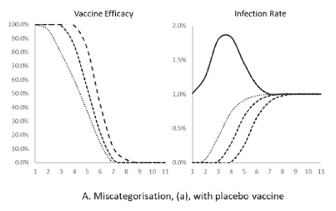
When I modified their simulation so that I also applied the classification delay to the numerator, unvaccinated and vaccinated people had an identical infection rate:
Earlier when Fenton and Neil posted a similar simulation on Substack, even people in their Substack comments were saying that their simulation was wrong:

I have asked Neil and Fenton to cite a single study where the classification delay was only applied to the numerator but not to the denominator, and I have also asked it from Mathew Crawford and James Lyons-Weiler who have supported Neil and Fenton's approach of applying the delay only to the numerator, but none of them has been able to cite a single study.
Neil and Fenton's paper was highly misleading because they conflated their simulation where the classification delay was only applied to the numerator with real studies where the delay was also applied to the denominator, but they didn't even make it clear in their paper that they only applied the delay to the numerator in their simulation. I had to read their old Substack post to understand how their simulation worked because it was not described properly in their paper.
Kirsch also wrote: "Fenton, Neil, McLachlan and Craig also managed to successfully demonstrate to the UK Office of the Statistics Regulator that these miscategorisation processes meant official statistics in the UK could not be relied upon when used to support arguments of Covid-19 vaccine effectiveness (link)".
He linked to a response by the UK Office for Statistics Regulation which said: "In your paper you also state that the number of deaths reported within the first 21 days of receiving the first dose of the Covid-19 vaccination is below that which could be expected in the general population, and that this difference is evidence of systematic undercounting of deaths by ONS. Our view of this question starts with the consideration that the population included is not representative of the general population, and it is therefore likely that any pattern you observe is attributable to the 'healthy vaccinee' effect. This happens when people who are ill (either due to COVID-19 or another relevant illness) are likely to delay vaccination. The result of this effect is a lower-than-average mortality rate within the first 21 days of receiving a vaccination. This effect is described by ONS in their Deaths by Vaccination Status publication."
So basically the response said that the misclasfification hypothesis by Fenton et al. was likely wrong, because the low number of deaths in the first few weeks after vaccination can be explained by the HVE instead. Other countries also have a very low number of deaths in the first few weeks after vaccination if you trust the record-level datasets from New Zealand, the United States, and the Czech Republic. It's why I have been saying that the record-level datasets are the Achilles' heel of the Cheap Tricksters called Fenton and Neil.
The letter by Craig, Neil, Fenton, and McLachlan related to a hypothesis presented in their preprint from March 2022 titled "Official mortality data for England reveal systematic undercounting of deaths occurring within first two weeks of Covid-19 vaccination". [https://www.researchgate.net/publication/358979921] In the preprint the authors speculated that because the ONS dataset for deaths by vaccination status had a low number of non-COVID deaths in the first two weeks after vaccination, deaths that occurred soon after vaccination were somehow systematically omitted or misclassified, but the authors discounted the HVE as an explanation for the low number of deaths. They wrote: "The healthy vaccinee hypothesis, that those close to death will postpone or decline vaccination might hypothetically account for a lower rate of death in the first two weeks. But as an explanation it is only plausible if every possible death that might occur in the first two weeks, after the offer of vaccination, was foreknown whilst those deaths in the third week were not, and hence those dying in the third week did not postpone or decline vaccination."
However Craig et al. didn't take into account that the temporal healthy vaccinee effect actually lasts longer than 2 weeks, but if you plot deaths by weeks since the first dose in England, the increasing trend in mortality caused by the waning out of the temporal HVE is counteracted by the decreasing trend in the background mortality rate, because many first doses in England were given during the first three months of 2021 when the mortality rate was falling rapidly because the COVID wave in the winter of 2020-2021 was passing by.
A similar effect can also be seen in the next plot of the Czech record-level data, where the light gray line has a sharp drop during the first weeks after vaccination, because the light gray line is adjusted for the background mortality rate among the entire Czech population during the ongoing month: [connecticut.html#Deaths_by_weeks_since_vaccination]

And in the next plot if you look at the dark gray line which is not adjusted for the monthly background mortality rate, the temporal HVE only seems to last about 3 weeks because there is a dent in deaths around the 4th week, even though it's because the rising trend in deaths due to waning out of the HVE is counteracted by the falling trend in background mortality rate. But in the light gray line which is adjusted for background mortality rate, the temporal HVE seems to last around 20 weeks instead:

I believe a similar effect explains why the temporal HVE for first doses only appears to last about 3 weeks in Kirsch's Medicare data even though it lasts longer in Barry Young's New Zealand data, because in the US a lot of people got the first dose during the tail end of a COVID wave in early 2021, but New Zealand was free of COVID in 2021 when most people got the first dose: [connecticut.html#Comparison_of_deaths_by_weeks_since_vaccination_to_other_datasets]
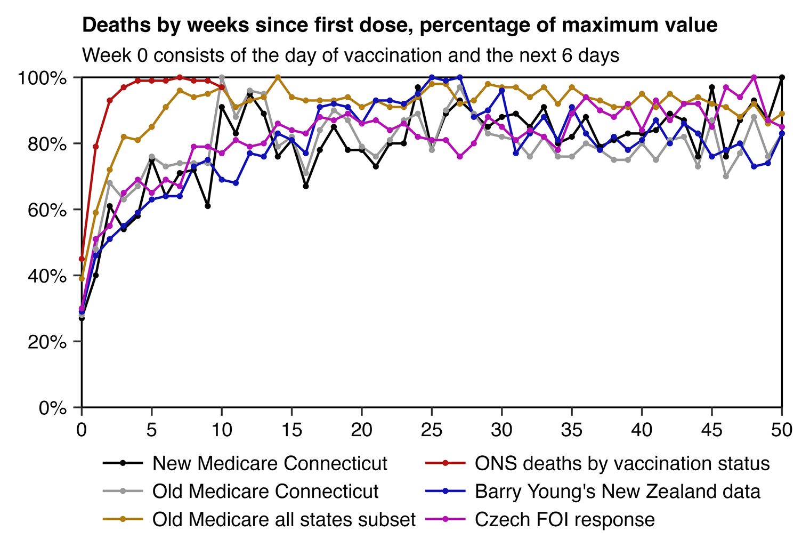
Clare Craig might have later come to the conclusion that the low number of deaths during the first two weeks after vaccination might be explained by the HVE, because in 2024 when someone asked her what she meant by the healthy vaccinee effect, she answered that "Studies show that the first few weeks after vaccination are outliers because people who are feeling ill postpone." [https://x.com/ClareCraigPath/status/1844085783365550508]
In 2022 Martin Neil tweeted: "The ONS's December report claims anomalies we identified are caused by healthy vaccinee effect. We examined the new ONS data and found NO evidence to support this claim". [https://x.com/MartinNeil9/status/1481561698792267779] And in March 2024 Neil tweeted: "There is no evidence of a healthy vaccinee effect. You are signing up to an assumption usually exploited to pretend vaccines are effective. We demonstrated this using the ONS's own data." [https://x.com/MartinNeil9/status/1767991047940907318] However by April 2024 he seems to have come to the conclusion that the HVE might be real after all based on a Czech study which said that the HVE explained why unvaccinated people had higher mortality than vaccinated people. [https://x.com/MartinNeil9/status/1780163490247791002]
So the old letter by Craig and Neil et al. might no longer represent their current views regarding the HVE. The letter also conflicts with the view of Kirsch, who has said that that the HVE explains why his record-level datasets have a low number of deaths in the first few weeks after vaccination, but he has not claimed that his record-level datasets would suffer from the kind of miscategorization bias that was hypothesized by Clare Craig, Martin Neil, and Norman Fenton.
Kirsch wrote:
This just-published study done by the CDC shows in Table 2 that the Pfizer vaccine given to COVID-naive kids increases the risk of symptomatic COVID infection: HR 3.57 (1.10, 11.63). Since, by the CDC's own study, the vaccine increases the odds of a symptomatic COVID infection by an estimated 3.57 in healthy kids under 4, what do you think it will do to the elderly? It is highly unlikely for a vaccine to simultaneously increase the risk of infection in one age group (e.g., children under 4) while reducing it in another age group (e.g., adults). There are NO well-documented examples where a vaccine increased infection risk in one demographic while reducing it in another. Show me the counterexample if you think I'm wrong. Otherwise, we're done with this category. Since even the CDC admits they were wrong (i.e., their own paper shows vaccines increased risk).
The paper he linked is behind a paywall and not at Sci-Hub or Researchgate so I wasn't able to read it: https://www.scienceopen.com/document?vid=c46d3b29-4916-4e80-883f-c095035db6dc. However the abstract says that "there was no difference in risk by vaccination status" (which might mean that there was some risk but it was not significant): "To understand how coronavirus disease 2019 vaccines impact infection risk in children <5 years, we assessed risk of severe acute respiratory syndrome coronavirus 2 (SARS-CoV-2) infection from September 2022 to April 2023 in 3 cohort studies. There was no difference in risk by vaccination status. While vaccines reduce severe disease, they may not reduce SARS-CoV-2 infections in naïve young children."
The results of the paper seem to match this CDC dataset where the rate of COVID cases per person-weeks is similar in unvaccinated and vaccinated people in ages 0-4, even though in older age groups the ratio gradually gets much higher in unvaccinated people: [https://data.cdc.gov/Public-Health-Surveillance/Rates-of-COVID-19-Cases-or-Deaths-by-Age-Group-and/54ys-qyzm/about_data]

library(data.table);library(ggplot2)
t=fread("Rates_of_COVID-19_Cases_or_Deaths_by_Age_Group_and_Updated__Bivalent__Booster_Status_20241231.csv")
p=t[outcome=="case"&age_group!="all_ages"&vaccination_status=="vaccinated"]
p[,x:=isoweek(mmwr_week%/%100,mmwr_week%%100,4)]
p[,vaxpct:=vaccinated_population/(vaccinated_population+unvaccinated_population)*100]
lab=c("Unvaccinated","Fully vaccinated","Vaccinated percent (panel top is 100%)")
p=p[,.(x,y=c(c(crude_unvax_ir,crude_vax_ir)/7*365,vaxpct),z=factor(rep(lab,each=.N),lab),group=age_group)]
age=unique(p$group);p[,group:=factor(group,age[order(as.integer(sub("[-+].*","",age)))])]
p=merge(p,p[z!=levels(z)[3],.(maxy=max(y)),group])
p[z==levels(z)[3],y:=y/100*maxy]
xstart=as.Date("2021-7-1");xend=as.Date("2023-7-1")
xbreak=as.Date(c("2021-10-1","2022-7-1","2023-4-1"));xlab=year(xbreak)
ggplot(p,aes(x,y))+
facet_wrap(~group,ncol=2,dir="v",scales="free_y")+
geom_vline(xintercept=seq(as.Date("2022-1-1"),xend,"year"),color="gray80",linewidth=.5)+
geom_line(aes(color=z,linetype=z),linewidth=.6)+
geom_text(data=p[,max(y),group],aes(y=V1,label=group,x=xstart+20),fontface=2,size=3.6,vjust=1.9,hjust=0)+
labs(title="CDC: COVID cases per 100,000 person-years by vaccination status and age",subtitle=paste0("Source: CDC dataset \"Rates of COVID-19 Cases or Deaths by Age Group and Updated (Bivalent) Booster Status\". The fully vaccinated group consists of people who have completed the primary series doses at least 14 days ago. Partially vaccinated people are excluded.")|>stringr::str_wrap(76),x=NULL,y=NULL)+
scale_x_continuous(limits=c(xstart-.5,xend+.5),breaks=xbreak,labels=xlab)+
scale_y_continuous(limits=c(0,NA),breaks=\(x){y=pretty(x,4);y[y<max(x)*.9]},labels=\(x)ifelse(x>=1e3,paste0(x/1e3,"k"),x))+
coord_cartesian(clip="off",expand=F)+
scale_color_manual(values=c("black","#ff5555","#ff66ff"))+
scale_linetype_manual(values=c("solid","solid","42"))+
theme(axis.text=element_text(size=11,color="black"),
axis.text.x=element_text(margin=margin(5)),
axis.ticks=element_line(linewidth=.4,color="black"),
axis.ticks.length.x=unit(0,"pt"),
axis.ticks.length.y=unit(4,"pt"),
axis.title=element_text(size=8),
legend.background=element_blank(),
legend.box.spacing=unit(0,"pt"),
legend.key=element_blank(),
legend.key.height=unit(13,"pt"),
legend.key.width=unit(26,"pt"),
legend.position="top",
legend.justification="right",
legend.spacing.x=unit(2,"pt"),
legend.margin=margin(,,6),
legend.text=element_text(size=11,vjust=.5),
legend.title=element_blank(),
panel.background=element_blank(),
panel.border=element_rect(fill=NA,linewidth=.4),
panel.spacing.x=unit(4,"pt"),
panel.spacing.y=unit(3,"pt"),
plot.margin=margin(7,7,7,7),
plot.subtitle=element_text(size=11,margin=margin(,,4)),
plot.title=element_text(size=11.5,face=2,margin=margin(2,,6)),
strip.background=element_blank(),
strip.text=element_blank())
ggsave("1.png",width=6.4,height=5.5,dpi=300*4)
system("magick 1.png -resize 25% -colors 256 1.png")
Kirsch's Google Docs document included this plot by Jikkyleaks: [https://x.com/Jikkyleaks/status/1870708191367254095]
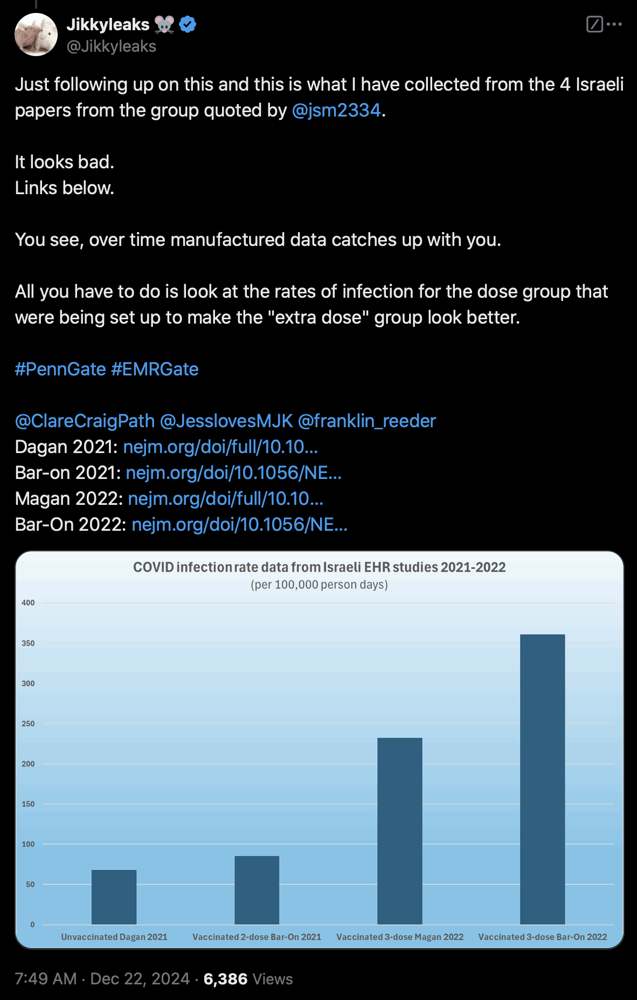
Canceledmouse performed a similar analysis here which was documented more thoroughly: https://openvaet.substack.com/p/how-the-israeli-data-used-to-sell. It included this table that showed the observation period of each study:
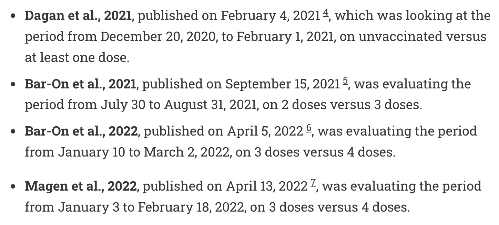
He also used different methodology to calculate the rate of cases per person-days in each study which was likely more accurate:
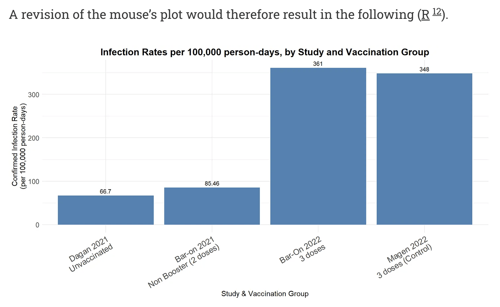
However the obvious flaw with the analysis is that the four studies were performed at different time periods when Israel had different rates of daily new COVID cases. When I divided the incidence values calculated by canceledmouse with the average daily new cases in Israel during the period of each study, I got a higher ratio for unvaccinated people in the first study than for people with three doses in the last two studies:
owid=fread("https://covid.ourworldindata.org/data/owid-covid-data.csv")
studies=fread(text="name,start,end,incidence
Dagan 2021 (unvaccinated),2020-12-20,2021-02-01,66.7
Bar-On 2021 (2 doses),2021-07-30,2021-08-31,85.46
Bar-On 2022 (3 doses),2022-01-10,2022-03-02,361
Magen 2022 (3 doses),2022-01-03,2022-02-18,348")
# OWID only had weekly new cases so this interpolates them to daily so that sums are preserved
cases=owid[location=="Israel"&new_cases>0,.(x=as.Date(date)-6,y=new_cases)]
daily=tempdisagg::td(cases~1,,"daily","fast")$values
studies[,meancases:=daily[time%in%start:end,mean(value)],name]
studies[,ratio:=incidence/meancases]
print(studies,r=F)
name start end incidence meancases ratio
Dagan 2021 (unvaccinated) 2020-12-20 2021-02-01 66.70 6297.8 0.0105911
Bar-On 2021 (2 doses) 2021-07-30 2021-08-31 85.46 6068.9 0.0140815
Bar-On 2022 (3 doses) 2022-01-10 2022-03-02 361.00 41151.9 0.0087724
Magen 2022 (3 doses) 2022-01-03 2022-02-18 348.00 45093.5 0.0077173
The last two studies were done during the Omicron spike when there was a huge number of new cases:
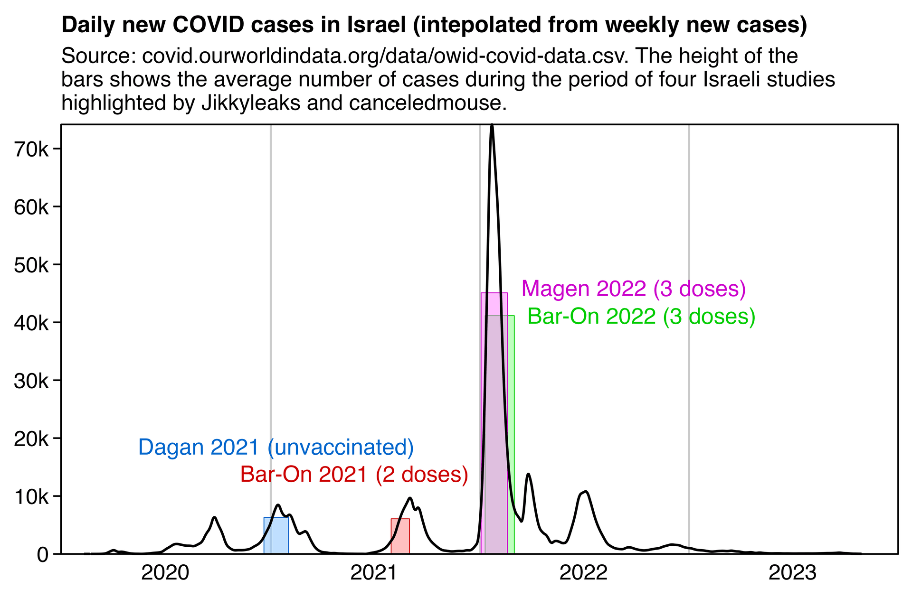
library(data.table);library(ggplot2)
owid=fread("https://covid.ourworldindata.org/data/owid-covid-data.csv")
studies=fread(text="name,start,end,incidence
Dagan 2021 (unvaccinated),2020-12-20,2021-02-01,66.7
Bar-On 2021 (2 doses),2021-07-30,2021-08-31,85.46
Bar-On 2022 (3 doses),2022-01-10,2022-03-02,361
Magen 2022 (3 doses),2022-01-03,2022-02-18,348")
cases=owid[location=="Israel"&new_cases>0,.(x=as.Date(date)-6,y=new_cases)]
daily=tempdisagg::td(cases~1,,"daily","fast")$values
studies[,meancases:=daily[time%in%start:end,mean(value)],name]
studies[,ratio:=incidence/meancases]
p=daily[,.(x=time,y=value)]
yend=max(p$y);xstart=as.Date("2020-1-1");xend=as.Date("2024-1-1")
xbreak=seq(xstart+182,xend,"year");xlab=year(xbreak)
hue=c(0,12,21,30)/36;color=hsv(hue,1,.8);fill=hsv(hue,.5,1)
ggplot(p)+
geom_vline(xintercept=seq(xstart,xend,"year"),color="gray80",linewidth=.5)+
geom_rect(data=studies,aes(xmin=start,xmax=end,ymin=0,ymax=meancases,color=name,fill=name),linewidth=.2,alpha=.5)+
geom_text(data=studies,aes(x=pmean(start,end),y=meancases,label=name,color=name),vjust=c(-2.3,-4,.5,.5),hjust=c(.5,.7,-.12,-.12),size=4)+
geom_line(aes(x=x,y=y),linewidth=.6)+
scale_x_continuous(limits=c(xstart,xend),breaks=xbreak,labels=xlab)+
scale_y_continuous(limits=c(0,NA),breaks=\(x)pretty(x,7),labels=\(x)ifelse(x>=1e3,paste0(x/1e3,"k"),x))+
labs(title="Daily new COVID cases in Israel (intepolated from weekly new cases)",subtitle=paste0("Source: covid.ourworldindata.org/data/owid-covid-data.csv. The height of the bars shows the average number of cases during the period of four Israeli studies highlighted by Jikkyleaks and canceledmouse.")|>stringr::str_wrap(82),x=NULL,y=NULL)+
scale_color_manual(values=color)+
scale_fill_manual(values=fill)+
coord_cartesian(clip="off",expand=F)+
theme(axis.text=element_text(size=11,color="black"),
axis.text.x=element_text(margin=margin(5)),
axis.ticks=element_line(linewidth=.4,color="black"),
axis.ticks.length.x=unit(0,"pt"),
axis.ticks.length.y=unit(4,"pt"),
axis.title=element_text(size=8),
legend.position="none",
panel.background=element_blank(),
panel.border=element_rect(fill=NA,linewidth=.4),
panel.spacing.x=unit(4,"pt"),
panel.spacing.y=unit(3,"pt"),
plot.margin=margin(7,7,7,7),
plot.subtitle=element_text(size=11,margin=margin(,,5)),
plot.title=element_text(size=11.5,face=2,margin=margin(1,,5)))
ggsave("1.png",width=6.4,height=4.2,dpi=300*4)
system("magick 1.png -resize 25% -dither none -colors 256 1.png")
The median age was also 45 in the first study (Dagan et al. 2021), but the other three studies only included people aged 60 and above, and the median age was 72 years in the last study.
Kirsch wrote: "Worldwide COVID case numbers reported by OWID and accessible from this page show that highly vaxxed countries have higher cases per million (see The Aarstad paper below). For example, Singapore has one of the highest vaccination rates in the world and everyone was vaxxed before they opened the country to foreigners. So Singapore should be a 'best possible' comparison scenario. So why do they have more cases per capita than the US? If the vaccine reduced infection as claimed, Singapore should be knocking it out of the park due to 1) heavy vaccination and 2) incredibly high herd immunity (due to the high vaccination rate), and 3) compliance with health directives which, if the authorities were right, makes it impossible for the virus to spread. Yet from an infection rate, they did much worse than the US. How is that possible?"
However richer countries have a higher percentage of vaccinated people and richer countries also performed more tests per capita:

library(data.table);library(ggplot2)
download.file("https://covid.ourworldindata.org/data/owid-covid-data.csv","owid-covid-data.csv")
owid=fread("owid-covid-data.csv")
p=na.omit(owid[,.(y=total_cases_per_million,x=total_tests_per_thousand,location,continent)])
p=p[,.(x=max(x),y=max(y)),.(location,continent)]
p=p[x!=0&y!=0]
set.seed(0)
hue=c(0,60,120,210,300)+15
color=c("black",hcl(hue,110,50))
fill=c("black",hcl(hue,110,60))
ggplot(p,aes(x,y))+
ggforce::geom_mark_hull(aes(color=continent,fill=continent),concavity=1000,radius=unit(3,"pt"),expand=unit(4,"pt"),alpha=.2,size=.2)+
geom_smooth(method="lm",formula=y~x,size=.5,se=F,color="black",linetype=2)+
geom_point(aes(color=continent),size=1)+
geom_text(aes(color=continent,label=location),size=3,vjust=-.7)+
labs(title=paste0("OWID: Tests per thousand people vs cases per million people (r≈",p[,sprintf("%.2f",cor(x,y))],")"))+
labs(x="Tests per thousand people",y="Cases per million people")+
scale_x_log10(expand=c(.08,0,.06,0),labels=\(x)paste0("1e",log10(x)))+
scale_y_log10(expand=c(.03,0,.03,0),labels=\(x)paste0("1e",log10(x)))+
scale_fill_manual(values=fill)+
scale_color_manual(values=color)+
coord_cartesian(clip="off")+
theme(axis.text=element_text(size=11,color="black"),
axis.ticks=element_line(linewidth=.4,color="black"),
axis.ticks.length=unit(4,"pt"),
axis.title=element_text(size=11,face=2),
axis.title.x=element_text(margin=margin(5,0,0,0)),
legend.position="none",
panel.background=element_rect(fill="white"),
panel.border=element_rect(fill=NA,linewidth=.4),
panel.grid.major=element_blank(),
plot.margin=margin(8,6,6,6),
plot.subtitle=element_text(size=11),
plot.title=element_text(size=11.5,face=2))
ggsave("1.png",width=7,height=6,dpi=300*4)
system("magick 1.png -resize 25% -colors 256 1.png")
OWID doesn't have data for the number of tests performed in Singapore, but in both Hong Kong and China as a whole the number of tests performed per capita is about 2.4 times as high as in the United States:
> owid=fread("https://covid.ourworldindata.org/data/owid-covid-data.csv")
> owid[,max(total_tests_per_thousand,na.rm=T),location][V1!=-Inf][order(-V1)][1:40,.(location,tests_per_thousand=V1)]
location tests_per_thousand
1: Cyprus 32925.826
2: Austria 21272.133
3: United Arab Emirates 17994.670
4: Gibraltar 16322.865
5: Faroe Islands 14707.401
6: Denmark 11043.263
7: Slovakia 9405.660
8: Greece 8088.120
9: United Kingdom 7480.121
10: Bahrain 6812.903
11: Luxembourg 6725.731
12: Hong Kong 6594.993 # region similar to Singapore
13: China 6461.913
14: Israel 5573.137
15: Czechia 5193.488
16: Maldives 4240.251
17: Portugal 4161.808
18: France 4126.754
19: Latvia 3876.137
20: Andorra 3799.719
21: Italy 3795.998
22: Iceland 3709.574
23: Malta 3703.589
24: Georgia 3632.937
25: Palau 3308.200
26: Anguilla 3261.728
27: Lithuania 3128.553
28: British Virgin Islands 3104.878
29: Belgium 2955.332
30: Dominica 2836.077
31: Australia 2830.525
32: Qatar 2817.619
33: United States 2708.533 # United States ranks 33rd
34: Estonia 2577.757
35: Slovenia 2517.858
36: Barbados 2480.356
37: Ireland 2476.135
38: Switzerland 2448.135
39: Liechtenstein 2321.576
40: Mongolia 2213.041
location tests_per_thousand
But the number of cases per million is only about 1.8 times higher in Singapore than United States, so if the number of tests per capita in Singapore is similar to Hong Kong and China, then Singapore might have a lower rate of cases per tests than the United States:
> owid[location%in%c("Singapore","United States"),.(total_cases_per_million=max(total_cases_per_million,na.rm=T)),location]
location total_cases_per_million
1: Singapore 532073.6
2: United States 302859.5
Kirsch wrote:
Despite being highly biased to make the product look as good as possible, the only mortality benefit Pfizer/BioNTech could find during their clinical trial was one COVID life saved in the trial, during the blinded period of July to mid-November (see Table S4 in the Appendix page 11). So at best they can claim "1 life saved from COVID" per 22,000 fully vaccinated.
Extrapolate that out to 270M people in the US who were injected. So the very best case is that the COVID vaccines saved on the order of 12,000 lives under ideal conditions. I don't believe it is anywhere close to that, but if you claim more than this number, it means you are saying the "gold-standard trials" are wrong and if the gold-standard DB-RCT trials are wrong, then everything else should be highly suspect.
However the study did not have a sufficiently large sample size to determine the impact of the vaccine on COVID deaths, so Kirsch would need to insert a very wide confidence interval to his estimate of 1 life saved per 22,000 vaccinated people. The study also included only 6 months of follow-up, and it's possible that more people could have died of COVID after the follow-up period was over.
The Pfizer phase 3 trial also included a low proportion of people who were at very high risk of dying from COVID due to old age or comorbidities.
Kirsch wrote:
CFR calculated from COVID cases and COVID deaths in the US. I did the analysis and posted it here for all to see. The CFR doesn't drop consistently below the pre-vaccination level until the variants become less deadly. If the vaccine reduced the CFR, you would be able to, without looking at the x-axis date, tell exactly when the vaccine rolled out because the points would start moving lower from the date of first vaccination onward. So the downward slope would have increased. Can you?
CDC has published a dataset for COVID cases and deaths by vaccination status, which doesn't include the whole US population but only certain jurisdictions with a total population sample of about 100 million: https://data.cdc.gov/Public-Health-Surveillance/Rates-of-COVID-19-Cases-or-Deaths-by-Age-Group-and/54ys-qyzm.
In each age group included in the CDC dataset, the rate of COVID cases per person-weeks is lower in vaccinated people than unvaccinated people, even though the difference is smaller in younger age groups:
In each age group the total rate of COVID deaths per person-weeks is also lower in vaccinated than unvaccinated people:

However the difference between unvaccinated and vaccinated people isn't as big for cases as for deaths, so the difference in CFR is also not as big as the difference in deaths. Unvaccinated people still have clearly higher CFR within age groups, even though the ratio between unvaccinated and vaccinated CFR also gets lower over time, which might be if unvaccinated people acquire natural immunity over time or the effect of vaccination wears out:
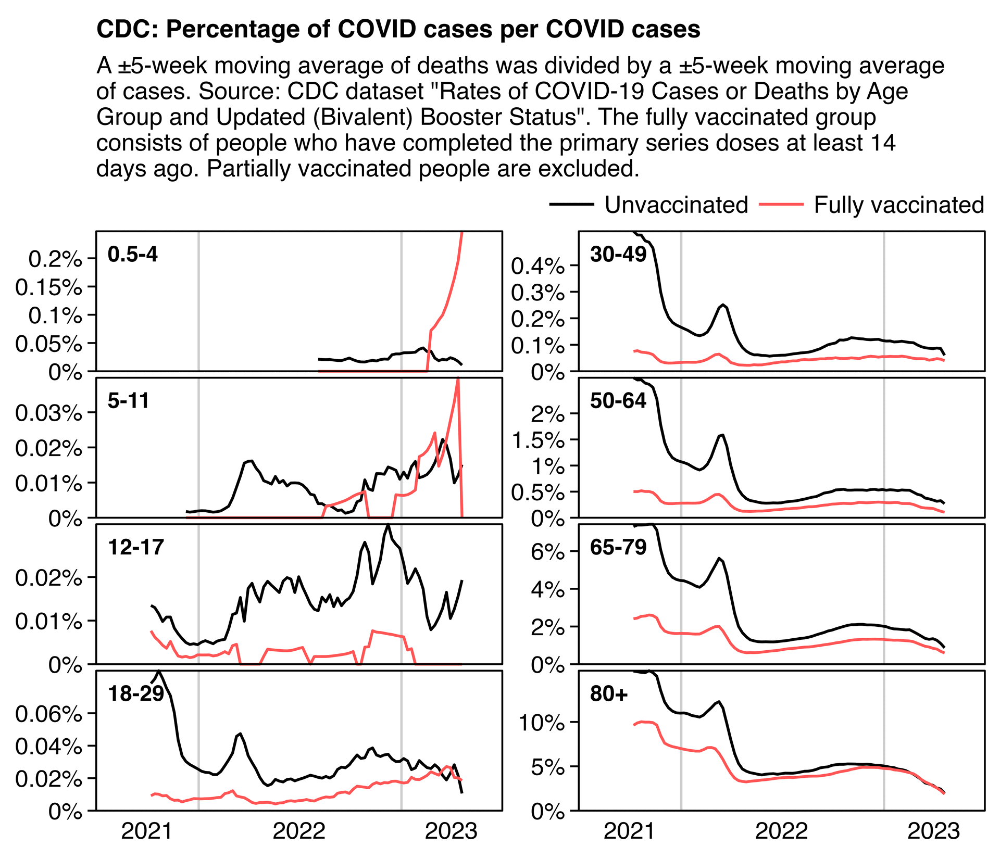
library(data.table);library(ggplot2)
t=fread("Rates_of_COVID-19_Cases_or_Deaths_by_Age_Group_and_Updated__Bivalent__Booster_Status_20241231.csv")
p=t[age_group!="all_ages"&vaccination_status=="vaccinated"]
p[,x:=isoweek(mmwr_week%/%100,mmwr_week%%100,4)]
p[,vaxpct:=vaccinated_population/(vaccinated_population+unvaccinated_population)*100]
lab=c("Unvaccinated","Fully vaccinated")
a=p[,.(x,y=c(crude_unvax_ir,crude_vax_ir)/7*365,z=factor(rep(lab,each=.N),lab),group=age_group,outcome)]
p=dcast(a,x+z+group~outcome,value.var="y")[,.(x,y=ma(nafill(death,,0),5)/ma(nafill(case,,0),5)),.(group,z)]
age=unique(p$group);p[,group:=factor(group,age[order(as.integer(sub("[-+].*","",age)))])]
xstart=as.Date("2021-7-1");xend=as.Date("2023-7-1")
xbreak=as.Date(c("2021-10-1","2022-7-1","2023-4-1"));xlab=year(xbreak)
ggplot(p,aes(x,y))+
facet_wrap(~group,ncol=2,dir="v",scales="free_y")+
geom_vline(xintercept=seq(as.Date("2022-1-1"),xend,"year"),color="gray80",linewidth=.5)+
geom_line(aes(color=z,linetype=z),linewidth=.6)+
geom_text(data=p[,max(y),group],aes(y=V1,label=group,x=xstart+20),fontface=2,size=3.6,vjust=1.9,hjust=0)+
labs(title="CDC: Percentage of COVID cases per COVID cases",subtitle=paste0("A ±5-week moving average of deaths was divided by a ±5-week moving average of cases. Source: CDC dataset \"Rates of COVID-19 Cases or Deaths by Age Group and Updated (Bivalent) Booster Status\". The fully vaccinated group consists of people who have completed the primary series doses at least 14 days ago. Partially vaccinated people are excluded.")|>stringr::str_wrap(76),x=NULL,y=NULL)+
scale_x_continuous(limits=c(xstart-.5,xend+.5),breaks=xbreak,labels=xlab)+
scale_y_continuous(limits=c(0,NA),breaks=\(x){y=pretty(x,4);y[y<max(x)*.9]},labels=\(x)paste0(x*100,"%"))+
coord_cartesian(clip="off",expand=F)+
scale_color_manual(values=c("black","#ff5555","#ff66ff"))+
scale_linetype_manual(values=c("solid","solid","42"))+
theme(axis.text=element_text(size=11,color="black"),
axis.text.x=element_text(margin=margin(5)),
axis.ticks=element_line(linewidth=.4,color="black"),
axis.ticks.length.x=unit(0,"pt"),
axis.ticks.length.y=unit(4,"pt"),
axis.title=element_text(size=8),
legend.background=element_blank(),
legend.box.spacing=unit(0,"pt"),
legend.key=element_blank(),
legend.key.height=unit(13,"pt"),
legend.key.width=unit(26,"pt"),
legend.position="top",
legend.justification="right",
legend.spacing.x=unit(2,"pt"),
legend.margin=margin(,,6),
legend.text=element_text(size=11,vjust=.5),
legend.title=element_blank(),
panel.background=element_blank(),
panel.border=element_rect(fill=NA,linewidth=.4),
panel.spacing.x=unit(4,"pt"),
panel.spacing.y=unit(3,"pt"),
plot.margin=margin(7,7,7,7),
plot.subtitle=element_text(size=11,margin=margin(,,4)),
plot.title=element_text(size=11.5,face=2,margin=margin(2,,6)),
strip.background=element_blank(),
strip.text=element_blank())
ggsave("1.png",width=6.4,height=5.5,dpi=300*4)
system("magick 1.png -resize 25% -colors 256 1.png")
Unfortunately the CDC dataset only starts in October 2021 so I wasn't able to compare the CFR before and after the vaccine rollout.
In observational data like the CDC dataset, the percentage of infections diagnosed as cases out of all infections might be lower for unvaccinated people than vaccinated people, which might cause unvaccinated people to have high CFR relative to IFR. Unvaccinated people might be less likely to get tested than vaccinated people if for example unvaccinated people are less likely to interact with medical services. For example I have never gotten vaccinated or tested, because I have not even interacted with medical services in any way in the past 5 years, but my neighbor grandma who frequently visits a hospital has been vaccinated about 9 times and tested even more times.
Kirsch wrote:
This OSU paper (Adhikari, 2024) was published in Frontiers and found the vaccinated had lower non-COVID mortality (due the selection bias) but higher COVID mortality (n=152 total patients):
Results: While mortality rates were 36% (n=25) and 27% (n=15) for non-COVID-19 NVax and Vax patients, respectively, in COVID-19 patients mortality rates were 37% (NVax, n=89) and 70% (Vax, n=23). Among COVID-19 patients, mortality rate was significantly higher among Vax vs. NVax patients (p=0.002).
In plain English, people who were hospitalized for Acute Respiratory Failure (ARF) conditions excluding COVID were 54% more likely to die (OR 1.54) if they were unvaccinated relative to the vaccinated. That makes total sense due to selection bias. But those hospitalized for COVID-19 were MUCH more likely to die if they were vaccinated (OR=3.9, 95% CI: 1.3-12.2). In short, the unvaccinated are generally less healthy, but when it comes to COVID 19, if you got the shots and were hospitalized for COVID, then you were much more likely to die. In short, the vaccine did exactly the opposite of what was promised: it made you more likely to die from COVID.
However the mortality rates in the paper were not adjusted for age, and among the patients infected with SARS-CoV-2, the median age was about 6 years higher for vaccinated people than unvaccinated people:
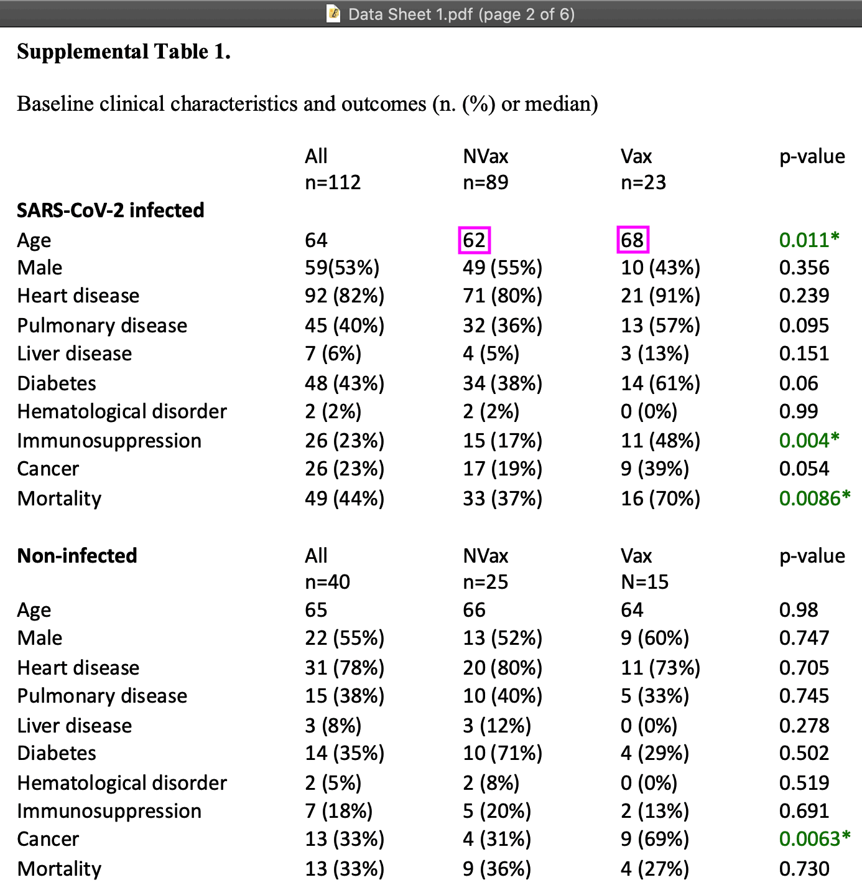
Kirsch claimed that in the study the "unvaccinated are generally less healthy" because unvaccinated people had a higher mortality rate among the people who were not hospitalized for COVID. But actually ST1 above shows that unvaccinated people had a lower percentage of comorbidities than vaccinated people (even though it's partially because unvaccinated people were younger).
The study looked at the ratio of deaths per hospitalizations, but it might be that unvaccinated people had a higher risk of hospitalization than unvaccinated people. The paper said: "In this single-center study, 152 adult patients were admitted to Ohio State University hospital with ARF (05/2020 - 11/2022) including 112 COVID-19-positive and 40 COVID-19-negative patients. Of the COVID-19 positive patients, 23 were vaccinated for SARS-CoV-2 (Vax), and 89 were not (NVax). Of the NVax COVID-19 patients, 46 were admitted before and 43 after SARS-CoV-2 vaccines were approved." So during the period after vaccines had been approved, there were 43 COVID hospitalizations for unvaccinated people but only 23 hospitalizations for vaccinated people. The observation period of the study lasted from May 2020 until November 2022, so for most of the study period starting from the vaccine rollout, the majority of people were vaccinated in ages 40 and above which accounted for most COVID hospitalizations in the study.
The study took place in Ohio State University Hospital. In the following code I took a weighted average of daily percentage of vaccinated people in Ohio where the weight was the number of COVID deaths the same day. I included the period from December 14th 2020 when the first vaccine dose in the United States was administered until October 31st 2022 when the observation period of the Ohio study ended. The resulting weighted percentage of vaccinated people was about 42%, but it includes people of all ages so the percentage would've been much higher if I would've looked at only older age groups that account for most COVID hospitalizations:
download.file("https://data.cdc.gov/api/views/pwn4-m3yp/rows.csv","statescases.csv")
download.file("https://data.cdc.gov/api/views/rh2h-3yt2/rows.csv","statesvax.csv")
vax=fread("statesvax.csv")
vax=vax[Location=="OH"][,.(x=as.Date(Date,"%m/%d/%Y"),vax=Administered_Dose1_Pop_Pct)]
dead=fread("statescases.csv")
dead=dead[state=="OH",.(date=as.Date(start_date,"%m/%d/%Y"),dead=new_deaths)]
a=merge(vax,dead[,spline(date,dead/7,xout=min(date):max(date))][,.(x,dead=y)])
a[x>="2020-12-14"&x<="2022-10-31",weighted.mean(vax,dead)] # 42.24037
Kirsch seems to have also overlooked that the study included 23 people hospitalized for COVID in ages 19-49, but only one of them was vaccinated, and 7 out the 22 unvaccinated people ended up dying (even though the study only included patients hospitalized for acute respiratory failure, so they were more likely to die than average people hospitalized for COVID):
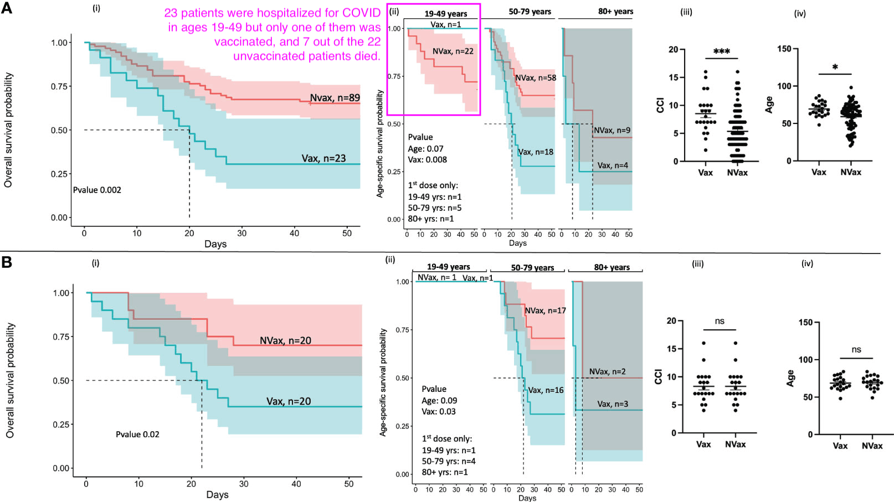
Kirsch wrote:
So we now have a complete explanation. People thought the vaccinated died less because of the vaccine, but this was a mirage. It was all selection and miscategorization bias. The Adhikari (2024) paper showed this effect as well for non-COVID hospitalizations where the COVID vaccinated patients died less for NON-COVID deaths, but died more for COVID deaths.
The Czech Republic data (record-level data obtained under FOIA) showed this as well because the mortality rate for those opting for the vaccine INSTANTLY dropped in half as soon as the groups split. For details, see A summary of why the Czech Republic data is so devastating to the "safe and effective" narrative. Note that this Henjin-produced graph is seriously flawed as explained in great detail here, but it illustrates the bias problem.
He claimed that the the healthy vaccinee effect explained why vaccinated ASMR had a massive drop in early 2021. However in the plot above if you look at the gray line which includes both unvaccinated and vaccinated people, it also dropped by about 43% between March 2021 and May 2021, which cannot be due to the healthy vaccinee effect because the gray line includes the entire population contained in the Czech dataset. But instead the gray line fell because there was a big drop in the number of COVID deaths starting in March 2021: [czech.html#Plot_of_multiple_variables_from_OWID]

In order to adjust for the HVE, in the next image I plotted ASMR as percentage of the ASMR in the second half of 2022 when there was a low number of COVID deaths. However during the COVID wave in December 2021, unvaccinated people still had a much bigger increase in deaths than vaccinated people: [czech2.html#ASMR_by_month_and_vaccine_type]
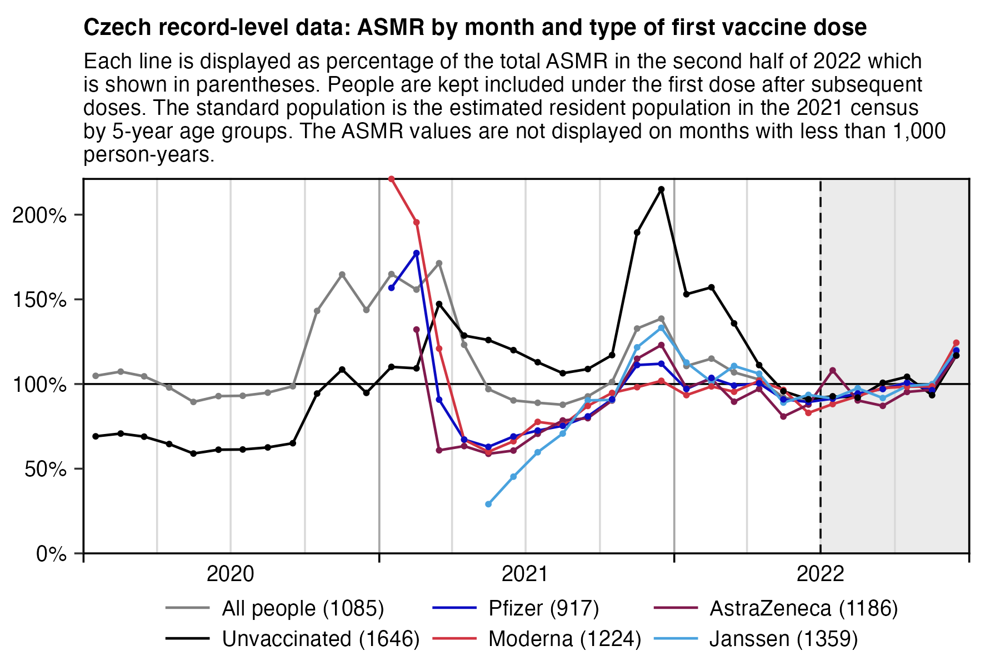
Out of the four vaccine brands included in the plot above, Janssen has the highest relative ASMR during the COVID wave in December 2021. It might be if Janssen vaccines were less effective than other vaccine brands, because in a Medicare dataset from Connecticut that was published by Kirsch, people who got a Janssen vaccine for their first dose also had high ASMR during the winter of 2021-2022 relative to ASMR during periods with low COVID deaths: [connecticut.html#ASMR_by_vaccine_brand_and_month]

(As an aside, the plot above also shows that in the Connecticut data people who got a Moderna vaccine for their first dose subsequently had much lower ASMR than people who got a Pfizer vaccine for the first dose. In the Czech record-level data it was the other way around so Kirsch claimed that the Czech data proved that Moderna vaccines were somehow more deadly than Pfizer vaccines. But I told him it was because of confounders and that other countries would have different profiles of confounders that would end up reversing the relationship, as was later shown by the Connecticut data.)
Kirsch wrote that "this Henjin-produced graph is seriously flawed as explained in great detail here", where he linked to a Substack post by canceledmouse who claimed that I was calculating ASMR incorrectly in my plot of the Czech record-level data.
I addressed the post in detail here: czech3.html#Reply_to_Substack_article_by_canceledmouse.
The reason why canceledmouse was not able to reproduce my ASMR calculation was because he had 4 bugs in his Perl code. I was able to fix all bugs by changing this line:
$deaths_per_100k_ASMR = $deaths_per_100k * $standard_percent / $age_group_percent_of_total;
To this:
$deaths_per_100k_ASMR = $deaths_per_100k * $standard_percent / 100 * 365 / ($rolling_days + 1);
When he calculated an 11-day moving average of deaths, he added together the deaths on 11 days but he forgot to divide them by 11. And the percentage of each age group in the standard population should've been divided by 100 to get the fraction of the age group. And the deaths per person-days should've been multiplied by 365 to get deaths per person-years. And a division by "age group percent of total" is not part of the formula for calculating ASMR.
He fixed the bugs after I pointed them out to him, and after that his code produced mostly similar results to my code. The remaining differences to my code were for two reasons. First I used the Czech 2021 census population as my standard population, but he used the WHO standard population which has a low percentage of people in elderly age groups so it's a very poor match to the Czech population structure. And second I applied a moving average where the window extended 10 days backwards and 10 days forwards to both deaths and population size, but he didn't apply a moving average to population size but he only applied a moving average that extended 10 days backwards to deaths, so his deaths were lagging 5 days behind the population size which underestimated the ASMR of vaccinated people in early 2021 when the vaccinated population size was increasing rapidly.
canceledmouse also claimed that my bucket analysis was done poorly, but the only reason he gave was that I assigned a random birthday to each person so he claimed my analysis was not reproducible. However he didn't notice that I assigned a seed in my code before I generated the random birthdays, and he corrected his error after I pointed it out to him.
canceledmouse pointed out that when he ran my code for generating the plot for ASMR by vaccine type, he got extra gray line with the label NA. However that was a line for Novavax that I forgot to remove from the code on my website.
canceledmouse also claimed that I shouldn't have used the term ASMR because I used the Czech 2021 census population as my standard population, but it's not a standardized standard population like the WHO standard population. However I explained why he was wrong in the section of my czech3.html file I linked above.
Kirsch also linked to his summary article about the Czech data, but I addressed the article here: czech3.html#Comment_to_Substack_post_by_Kirsch.
Kirsch wrote: "The Pfizer Phase 3 trial had more deaths in the treatment group than the placebo group. The researchers determined it wasn't the drug that caused any of the deaths, but this was based on speculation because they never did any of the required tests (documented in Schwab 2022) to rule out the drug causing ANY the deaths."
Kirch misleadingly only said that the treatment group had more deaths than the placebo group, but he didn't mention that the difference was negligible. The paper he linked said: "During the blinded, placebo-controlled period, 15 participants in the BNT162b2 group and 14 in the placebo group died; during the open-label period, 3 participants in the BNT162b2 group and 2 in the original placebo group who received BNT162b2 after unblinding died." The study had only 44,165 participants so it did not have sufficient power to determine the impact of the vaccine on all-cause mortality.
Kirsch wrote: "The v-Safe data showed that 8% of people had to seek professional medical help after getting their shots (783K out of 10.1M reporting). 8% seeking medical attention after a vaccine is a train wreck. This should be a red flag that the vaccines are not safe. If just 1% of these medical cases resulted in a death, that is a .08% death rate which is comparable to the minimum of 1 death per 1,000 vaccinated estimated in this document. Note: people signed up for v-safe at the time they got their shot; they were given a pamphlet to sign up for v-safe along with their vaccination card."
However a Reuters article said that the figure of 8% included people who seeked medical care within a year from receiving the vaccine: [https://www.reuters.com/legal/litigation/new-data-is-out-covid-vaccine-injury-claims-whats-make-it-2022-10-12/]
According to ICAN, 7.7% of the v-safe users - 782,913 people - reported seeking medical attention via a telehealth appointment, urgent care clinic, emergency room intervention or hospitalization following a COVID-19 vaccine.
About 25% of v-safe users said they experienced symptoms that required them to miss school or work or prevented them from doing other normal activities, according to ICAN's "dashboard" that summarizes the results.
There's no way, however, based on the information collected, to determine whether the COVID-19 vaccines actually caused the ailments. ICAN's analysis included responses reported beyond the first seven days post-vaccine and it counted all reports of people seeking medical attention up to a year after receiving the shot. ICAN did not specify when after vaccination they received the care, nor did the data indicate what the care was for.
[...]
In the first week after getting the shot, the [CDC] spokesperson continued, "reports of seeking any medical care (including telehealth appointments) range from 1-3% (depending on vaccine, age group and dose)."
She pointed me to a report, looking at the first six months of v-safe data to back up the assertion. In addition, another CDC spokesperson said that agency personnel made follow-up calls to any v-safe users who reported seeking medical attention.
But ICAN counsel Aaron Siri of Siri & Glimstad, who led the FOIA litigation against the agency, said that because some vaccine-related adverse effects (chronic arthritis, thrombocytopenia, Guillain-Barré syndrome, myocarditis and more) can appear weeks after vaccination, it's important to broaden the time frame beyond the one-week window in research the CDC cited.
[...]
The data has its limits. The CDC asked v-safe users to self-report a range of post-vaccine symptoms such as headache, joint pain and fatigue, and (irrespective of whether they sought medical attention) to categorize the ailments as mild, moderate or severe. The agency queried v-safe users about their health every day for the first week following vaccine, and then at various points afterwards for the next 12 months, gathering a total of 146 million records.
The study linked above said: "Reports of seeking medical care after mRNA vaccine were rare; v-safe surveys did not ask which symptoms prompted the participant to seek medical care." [https://pmc.ncbi.nlm.nih.gov/articles/PMC8901181/] Table 5 of the study showed that about 0.8% of people "reported medical care" within 8 days from receiving the first dose. The same table shows that only about 0.03% of people were listed as being hospitalized within 8 days from receiving the first dose.
It's not even clear if the rate of 8% people seeking medical care within a year is higher or lower than a baseline rate in the absence of COVID vaccination.
Kirsch wrote: "In Germany, even the regulator who promoted the vaccines admitted that 1 in 5,000 suffer from serious side effects. So that's a start, but the injury numbers are far higher than 1 in 5,000. This is just a perfect example of how officials are underreporting the true rate of harm, but at least acknowledging it."
The tweet by the German MoH said this in German: "One in 5,000 people is affected by a serious side effect after a COVID-19 #vaccination. If you suspect #side effects, get medical help and report your symptoms to @PEI_Germany http://nebenwirkungen.bund.de/nw/DE/home/home_node.html" [http://web.archive.org/web/20220720093113/https://twitter.com/BMG_Bund/status/1549688073478455297] The German MoH soon deleted the tweet and posted a similar tweet next day where the first sentence was changed to say: "The reporting rate for serious reactions @PEI_Germany is 0.2 suspected reports per 1,000 vaccine doses." [https://x.com/BMG_Bund/status/1550077552722644992] A reply to the new tweet also said this in German: "The reporting rate refers to all suspected reports, i.e. a causal connection with the vaccination is not yet confirmed with the suspected report; a temporal connection is first established." And another reply said: "In a tweet from July 20, there was an incorrect formulation regarding the reporting of suspected cases to the Paul Ehrlich Institute."
So the new thread clarified that the ratio in question was the rate of reports for suspected adverse events, and not a rate of people who "suffer from serious side effects" due to the vaccines like Kirsch suggested.
The latest safety report by the Paul Erlich Institute was published in March 2023, and it said this in German: "By March 31, 2023, the Paul Ehrlich Institute had received a total of 340,282 reports of suspected cases of side effects or vaccination complications following COVID-19 vaccines, of which 1,949 did not specify which vaccine was used. In 56,432 cases, the suspicion of a serious vaccination side effect was reported, of which 946 did not specify the vaccine. At the same time, according to the Robert Koch Institute, 192,208,062 COVID-19 vaccinations were administered in Germany." [https://www.pei.de/DE/newsroom/dossier/coronavirus/arzneimittelsicherheit.html] So at that point the ratio of serious reports per doses administered would've been about 0.029% (from 56432/192208062).
In a Czech dataset for adverse event reports up to July 4th 2023, there were a total of 6,719 serious adverse event reports which was about 0.038% of total doses administered up to that point, so it was fairly similar to the German ratio: [https://github.com/PalackyUniversity/batch-dependent-safety/blob/main/data/SUKL-batches-AE.xlsx]
> s2=setDT(readxl::read_excel("SUKL-batches-AE.xlsx",sheet=2))
> s2[,sum(serious)]
[1] 6719
> o=fread("owid-covid-data.csv")
> o[location=="Czechia"&date=="2022-7-4",total_vaccinations]
[1] 17681431
> 6719/17681431
[1] 0.0003800032
Kirsch wrote: "The official UK ASMR 21 days from dose 1 vs. Dose 2. Shows it is dose dependent. A 'safe' vaccine cannot have a dose dependent ASMR." And you linked to this tweet: [https://x.com/stkirsch/status/1858664074621710521]
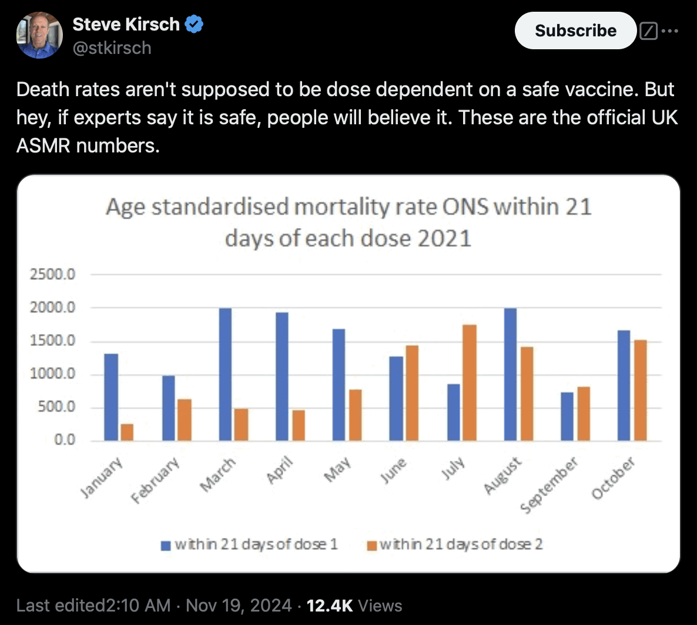
However the tweet didn't show what part of the ASMR was accounted for by COVID deaths. In January 2021 COVID ASMR was about 56% of all-cause ASMR in the category "First dose, less than 21 days ago", but there was very low COVID ASMR in the category "Second dose, less than 21 days ago": [uk.html#Clare_Craig_ASMR_within_3_weeks_from_vaccination_for_first_and_second_doses]
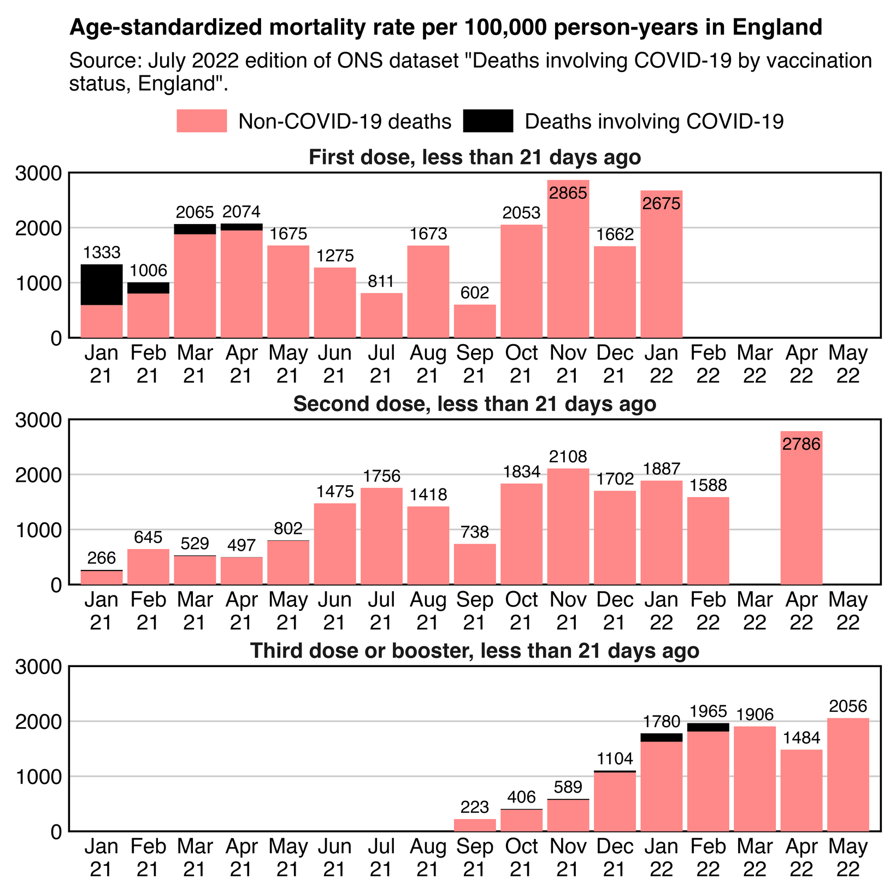
So it might be that the vaccine was not yet fully effective during the first couple of weeks from vaccination, or that two doses offered better protection than one dose.
But even after you exclude the COVID ASMR in black from my plot above, there's still a big difference between the one-dose and two-dose categories for non-COVID ASMR. It might partially be if people with two doses who have passed the "healthy vaccinee" test twice might also have lower mortality risk on average than people with one dose who have passed the test once.
There's also an effect I'm calling the "late vaccinee effect" where people who got vaccinated late subsequently have higher mortality than people who got vaccinated during the rollout peak. I have found the effect in Barry Young's New Zealand data, the Czech record-level data, Kirsch's Medicare data from Connecticut, and an English FOI request given to Clare Craig. It might be if for example people who got vaccinated late tend to be less conscientious than people who got vaccinated on time, or if some people got vaccinated late because they had an illness when the vaccine dose was rolled out. So it might explain why in the ONS data people who got the first dose late also have such high mortality. But for example some people who got the second dose in May 2021 may have already gotten the first dose in January 2021, so in May 2021 people who have received the second dose less than 21 days ago are not necessarily "late vaccinees" to the same extent as people who only got the first dose less than 21 days ago.
The next plot demonstrates the late vaccinee effect in a UKHSA FOI response to Clare Craig. The black line shows deaths in people vaccinated during the weeks shown on the x-axis up to the end of 2022. In each age group the black line is below the blue baseline on the week when the pink line for new vaccine doses peaked, but the black line gradually climbs up among the late veaccinees who got vaccinated after the rollout peak had already passed (with the exception that the "late vaccinee effect" seems to be missing from ages 20-29): [uk.html#Mortality_rate_by_week_of_vaccination_up_to_the_end_of_2022]

From the next plot of the Czech record-level data you can also see that people who got the first dose in February to May 2021 subsequently had low excess mortality even in 2022, but there was subsequently high excess mortality among the late vaccinees who only got the first dose after the initial rollout wave had already passed: [czech.html#Triangle_plot_for_excess_mortality_by_month_of_vaccination_and_month_of_death]

Kirsch wrote: "Denis Rancourt 125 countries study paper (521 pages) found an overall average vDFR=.00127 which is 1 death per 787 doses which is consistent with other estimates presented here." In the 125-country paper and the earlier southern-hemisphere paper, Rancourt ignored how excess deaths had a much higher temporal correlation with COVID deaths than with the daily number of vaccine doses administered. When Rancourt calculated the figure of 17 million vaccine deaths, he assumed that all excess deaths since vaccine rollout were due to vaccines.
However in a recent paper Rancourt now wrote that US data presented strong evidence that excess deaths were nearly entirely associated with deaths labeled as COVID deaths: [https://correlation-canada.org/respiratory-epidemics-without-viral-transmission/]
In the high-quality databases for the USA, there is a close match between the weekly reported COVID-19 mortality and weekly excess all-cause mortality, in the Covid period (2020-2022), including prior to and during the vaccine rollouts (CDC, 2023).
To the degree that COVID-19 death assignation represents a serious respiratory condition at death, and given the intricate weekly temporal matching of the reported COVID-19 mortality and excess all-cause mortality for up to 3 years in the USA data, this represents strong evidence that respiratory infections were dominantly (virtually entirely) associated with the excess all-cause mortality.
On page 255 of the 125-country paper Rancourt wrote that the Czech Republic had a spike in deaths which coincided with the booster rollout. However I told him that if you look at age-stratified data, deaths peaked around the same time in all age groups even though vaccine doses peaked about a month before deaths in ages 80+ and about a month after deaths in ages 40-59: [czech.html#Daily_deaths_and_vaccine_doses_by_age_group]
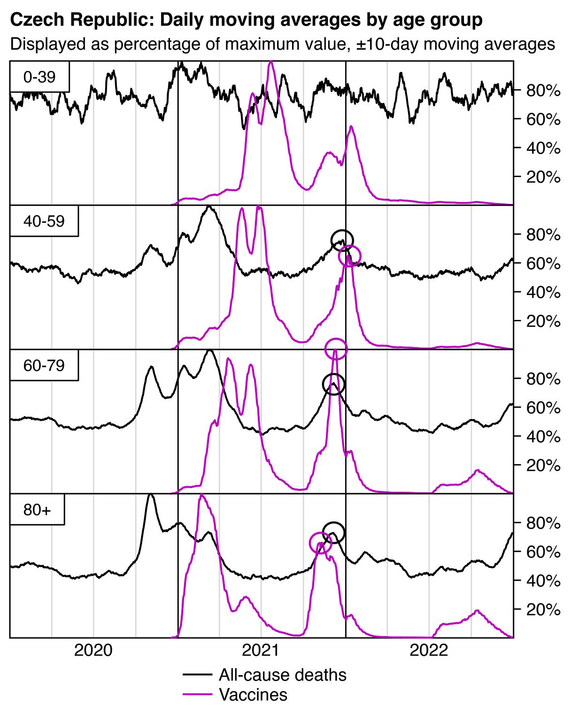
Age-stratified data presents a fatal weakness to Rancourt's approach of temporally correlating spikes in deaths with vaccine rollouts. In his paper about southern-hemisphere and equatorial countries, he included the plots for Peru that are shown in the GIF file below, and he argued that the spike of deaths in early 2021 was caused by the vaccines because the spike roughly coincided with the rollout of the first two doses in the oldest age groups. [https://correlation-canada.org/covid-19-vaccine-associated-mortality-in-the-southern-hemisphere/] However the spike in deaths also occurred around the same time in younger age groups even though younger age groups got vaccinated much later than older age groups:

In Rancourt's recent paper I believe he referred to the Czech record-level data in the following paragraphs, where he now seems to have admitted that the excess deaths that coincided with the booster rollout could not be attributed to people who had recently received the first booster:
Recently, Rancourt et al. (in preparation) analysed national mortality data in one country in which COVID-19 vaccination status was known at death, including the history of COVID-19 vaccinations, in a case in which the country exhibited rapid vaccine rollouts strongly temporally associated with observed surges in excess all-cause mortality. They found that relevant peaks in excess all-cause mortality associated with booster rollouts could not preferentially be assigned to booster-vaccinated individuals (and also that the vaccine had no detectable survival benefit).
This means that the COVID-19 vaccination primary cause described in Section 3.3.5 did not produce a measurable increase in excess all-cause mortality in this country, which in turn means that sharp peaks in excess all-cause mortality which are temporally associated with rapid vaccine rollouts need not imply that COVID-19 vaccination is a primary cause of death. Rather, it seems that (as pervasive as they are) such temporal associations between mortality peaks and rapid vaccine rollouts are due to the primary cause described in Section 3.3.6 of campaigns and measures associated in time and place with COVID-19 vaccine rollouts. Although non-conclusive in general, this is consistent with the fact that the vaccine toxicity causing death inferred from populationwide adverse-effect monitoring is usually too small to be detected directly in populationwide (e.g., national) cause-independent all-cause mortality, as per analyses of USA VAERS (Vaccine Adverse Events Reporting System) data (Hickey and Rancourt, 2022).
This would mean that the lethality of medical measures imposed during the Covid period and during vaccine rollouts is much greater than generally acknowledged, and much greater than the known (VAERS, autopsies, etc.) vaccine toxicity itself.
Rancourt now has to perform circus-level acrobatics to reconcile his earlier claim of 17 million vaccine deaths with his new claim that there were not necessarily that many deaths associated directly with vaccination, so he now suggests that the deaths were rather caused indirectly by measures associated with vaccination or by stress induced by vaccination, like the items I highlighted in yellow here: [https://denisrancourt.substack.com/p/did-the-c19-vaccine-kill-17-million]
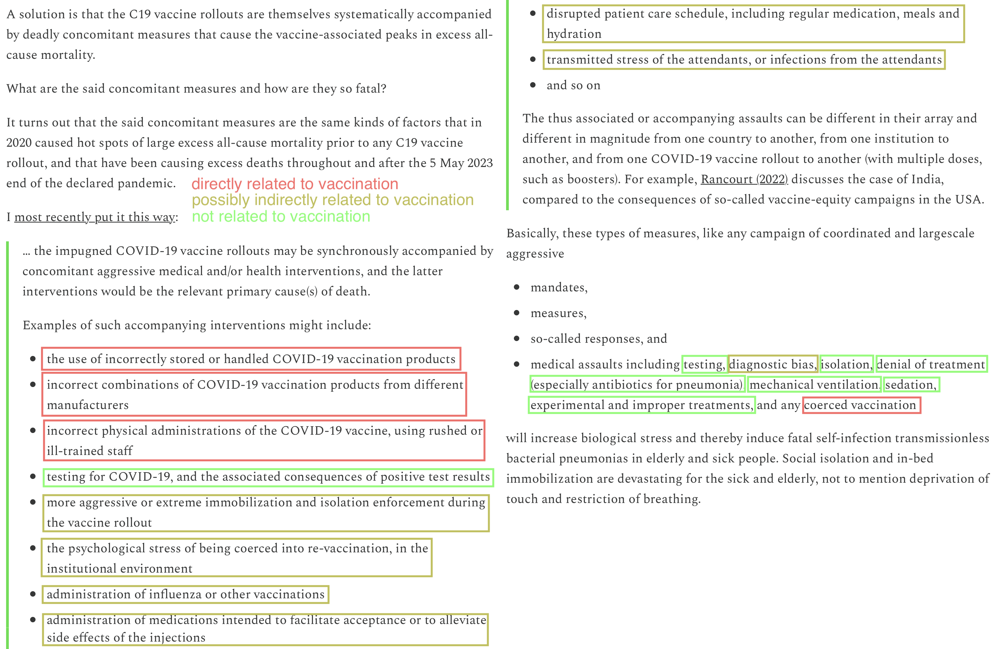
However his new theory doesn't seem to explain why the excess deaths were concentrated in waves that coincided with COVID waves, and why the waves were higher in unvaccinated than vaccinated people even after adjusting for HVE. Why did stress induced by vaccination kill unvaccinated people?
Kirsch wrote: "Hulscher (2024) looks at highly vaccinated King County. 'We found a 25.7% increase in total cardiopulmonary arrests and a 25.4% increase in cardiopulmonary arrest mortality from 2020 to 2023. Applying our model from these data to the entire United States yielded 49,240 excess fatal cardiopulmonary arrests from 2021-2023' (due to the COVID vaccine)."
I wrote about Hulscher's paper here: statistic2.html#McCullough_Foundation_Paper_about_cardiac_arrests_in_King_County_EMS_data.
Hulscher et al. wrote: "Specifically, the number of cardiopulmonary arrest deaths increased from 891 in 2015 to 1,110 in 2020, representing a 24.6% increase. In 2021, deaths jumped to 1,229 and continued to rise to 1,310 in 2022. The projection for 2023 suggests 1,392 cardiopulmonary arrest deaths in King County, WA, indicating a sharp 25.4% increase since the onset of COVID-19 vaccination campaigns"
However in Hulscher's Table 1 the number of deaths in 2020 was 1121 and not 1110. But 1110 was his baseline value for 2020, so he seems to have accidentally calculated the increase between 2020 and 2023 using the baseline value instead of the number of deaths for 2020:
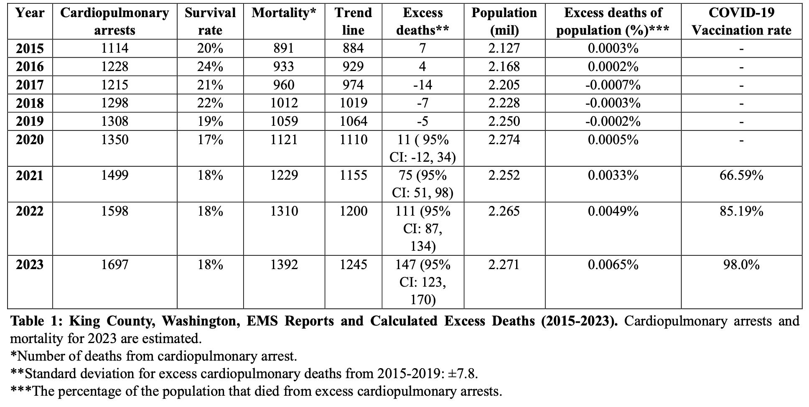
Hulscher's number of deaths actually increased from 1121 in 2020 to 1392 in 2023, so it was an increase of about about 24.2% and not 24.6%. But his baseline also increased by about 12% from 1110 in 2020 to 1245 in 2023. So the excess deaths only increased by about 10.8 percentage points (from (1392/1245)-(1121/1110)).
However his figure for 2023 wasn't even the real number of deaths but a linear projection of the deaths in 2021 and 2022. The real number of deaths in 2023 was published in September 2024 and it was 1358, so the excess deaths between 2020 and 2023 increased by only about 8.1 percentage points relative to Hulscher's baseline (from (1358/1245)-(1121/1110).
McCullough's Substack article about the paper was titled "Peer-Reviewed Study Reveals 1,236% Surge in Excess Cardiac Arrest Deaths Among 2 Million COVID-19 Vaccinated Individuals". But the paper didn't include information about the vaccination status of the people who died, and it might be that unvaccinated people were overrepresented among the people who died in excess since many of the excess deaths seem to have been due to COVID. And the 1236% increase was actually an increase from about 1.0% excess deaths in 2020 to about 11.6% excess deaths in 2023, so it was only an increase of about 10.6 percentage points. McCullough's people seem to have intentionally chosen a misleading headline, because they probably knew their followers would misinterpret the headline figure of a 1236% increase:

The plot above also shows that Hulscher's 2015-2019 linear baseline might have been too low in 2023, because the long-term trend in deaths seemed to be curved upwards.
Hulscher's paper only included data going back to 2015 even though the source where he took the deaths extended back to 2005. He might have omitted earlier years because there was a big drop in the number of deaths between 2014 and 2015, or because it would've showed that the long-term trend in deaths was curved upwards so the 2015-2019 linear baseline was not necessarily accurate.
Hulscher used data published by King County emergency medical services that showed the number of cardiac arrests the EMS responded to which led to a death. So it includes deaths due to COVID, and it's similar to data for cardiac arrest as a multiple cause of death where deaths due to COVID are not excluded. But based on CDC WONDER's data for King County, deaths with MCD COVID explain a large part of excess MCD cardiac deaths since 2020, and there's only a low number of excess UCD cardiac deaths since 2020:

Washington State had a low number of COVID deaths in 2020 relative to 2021 and 2022, so Hulscher's approach of using the year 2020 as the baseline before vaccination but after COVID is not necessarily accurate:

Kirsch wrote:
Aarstad (2023) found a highly statistically significant POSITIVE association between vax uptake in 2021 and increased mortality in 2022 in the 31 EU countries where data was available. In short, more vaccines → more deaths.
They accounted for lag in deaths (COVID deaths occur days after COVID infection) and potential confounders.
The study found that:
- A one percentage point increase in 2021 vaccination uptake was associated with a 0.105% monthly increase in 2022 all-cause mortality (95% Cl: 0.075 - 0.134).
- This association was statistically significant and remained robust even after controlling for alternative explanations, such as prior mortality trends (2020 - 2021 average relative to pre-pandemic years), life expectancy, and potential multicollinearity issues
That's a huge negative impact. What was the error and what are the correct numbers? Where is the study, using exactly the same data, showing the correlation is negative?
Similar analyses have also been done by Peter Hegarty, Raphael Lataster, and Guyla Nagy: statistic2.html#Excess_mortality_in_European_countries_compared_to_percentage_of_vaccinated_people. But like Aarstad's study, they all took excess deaths from Eurostat which uses the average number of deaths in 2016-2019 as the baseline.
Eurostat's baseline exaggerates excess deaths in Western European countries relative to Eastern European countries in 2022, because Western European countries had a steeper increase in the yearly number of deaths before COVID, and because Eastern European countries had a greater reduction to population size due to excess deaths in 2020-2021.
In the next plot I calculated the green baseline by doing a linear regression for CMR in 2010-2019 for each age, and then I multiplied a projection of the regression with the population size for each age to get the expected deaths for each age. So my green baseline accounts for the aging population which produces an upwards curve in the expected deaths per year in many countries, and it also accounts for the reduction in population size due to excess deaths since 2020. But from the last two panels of my plot which show the average values for Western European and Eastern European countries, you can see that the green baseline is above the 2016-2019 average in Western European countries but below the 2016-2019 average in Eastern European countries:

Another way to account for the changing age composition and reduction in population size due to excess deaths is simply to calculate excess ASMR. In the next plot compared to the excess ASMR relative to a linear trend in 2013-2019 which is more accurate, you can see how Eurostat's 2016-2019 baseline overestimates excess deaths in Western European countries relative to Eastern European countries:

So when I calculated excess mortality using the 2013-2019 linear trend in ASMR instead, I got negative correlation between excess mortality in 2022 and the percentage of vaccinated people in 2022:

Here when I used the same method to calculate excess ASMR, the correlation in 2023 was also close to zero:

Kirsch wrote: "Right after corporate America started requiring COVID vaccinations, the CEO of the OneAmerica insurance company publicly disclosed that during the third and fourth quarters of 2021, death in people of working age (18–64) was 40 percent higher than it was before the pandemic. Significantly, the majority of the deaths were not attributed to COVID."
However the article he linked just said: "Most of the claims for deaths being filed are not classified as COVID-19 deaths, Davison said." [https://www.thecentersquare.com/indiana/indiana-life-insurance-ceo-says-deaths-are-up-40-among-people-ages-18-64/article_71473b12-6b1e-11ec-8641-5b2c06725e2c.html] So it said most deaths in general and not most excess deaths, which does not exclude the possibility that most of the 40% excess deaths would've been due to COVID.
On CDC WONDER during the second half of each year, ages 18-64 have about 41% more deaths in 2022 than 2021, so it's in fact very close to the figure of 40%:
> pop=fread("http://sars2.net/f/uspopdeadmonthly.csv")
> pop[year>=2018&year<2024&month>=7&age%in%18:64,.(dead=sum(dead)),year]|>print(r=F)
year dead
2018 348577
2019 351102
2020 437852
2021 495284
2022 395982
2023 368472
In July to December of 2021, ages 18-64 had 87,677 deaths with UCD COVID and 97,630 deaths with MCD COVID. So deaths with UCD COVID account for about 61% of the difference between 2021 and 2019 (from 87677/(495284-351102)): [stat.html#Download_fixed_width_and_CSV_files_for_the_NVSS_data_used_at_CDC_WONDER]
> v=fread("curl -Ls sars2.net/f/vital.csv.xz|xz -dc")
> v[month>=7&age%in%18:64][cause=="U071",.(ucd=sum(ucd),mcd=sum(mcd)),year]
year ucd mcd
1: 2020 188108 50124
2: 2021 366851 97630
3: 2022 29630 10500
The number of deaths with UCD related to recreational drug use also increased from 34,240 in the second half of 2019 to 49,196 in the second half of 2021, so it accounts for about 10% of the increase in total deaths between 2019 and 2021:
> v[month>=7&age%in%18:64][cause%like%"X4[0-4]|X6[0-4]|Y1[0-4]",.(ucd=sum(ucd),mcd=sum(mcd)),year][year>2018] year ucd mcd 1: 2019 173405 36643 2: 2020 218918 45790 3: 2021 249916 52141 4: 2022 254351 53202
On CDC WONDER if you calculate a ratio of deaths with UCD COVID in 2021 divided by 2020, it's about 2.02 in ages 18-64 but about 1.05 in ages 65 and above:
> v[cause=="U071"&age%in%18:64,.(ucd=sum(ucd)),year] year ucd 1: 2020 280867 2: 2021 568342 3: 2022 181644 > v[cause=="U071"&age>=65,.(ucd=sum(ucd)),year] year ucd 1: 2020 1156756 2: 2021 1210465 3: 2022 656996
So why did working-age people have such a high percentage of COVID deaths in 2021 relative to 2020? I think it's because in 2021 working-age people were less likely to be vaccinated than elderly people.
In the winter of 2020-2021 the Czech Republic had a pattern of mortality with three distinct humps, where in ages 80+ the first hump was the highest and the third hump was the lowest, but ages 40-59 followed an opposite pattern. I think it's because by the time of the third hump, the percentage of vaccinated people was over 50% in ages 80+ but less than 10% in ages 40-59: [czech.html#Daily_deaths_and_vaccine_doses_by_age_group]

From the next plot for age-standardized hospitalization rate in the Czech Republic, you can see that working age people had a high hospitalization rate in 2021 relative to 2020 compared to elderly people, but it's explained by a lower percentage of vaccinated people among working-age people: [czech3.html#Hospitalizations_by_age_group_and_vaccination_status]
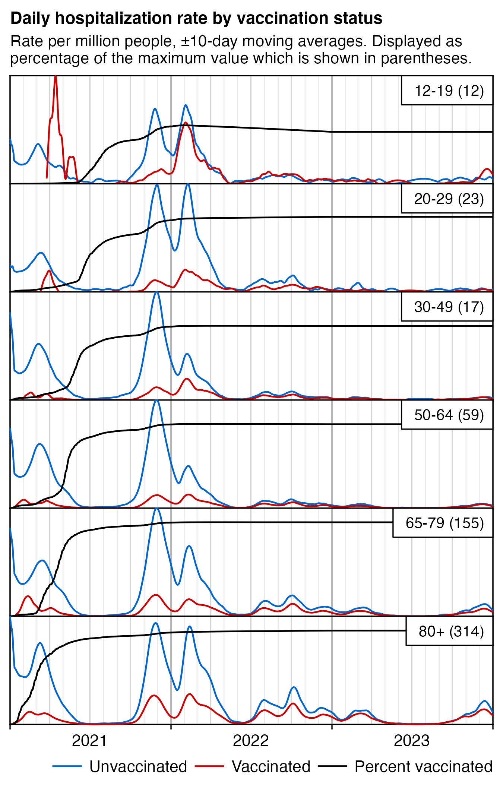
If you are going to blame vaccines for the excess deaths in working-age people in the second half of 2021, another problem is that there were low excess deaths in northeastern states which had a high percentage of vaccinated people, but there were high excess deaths in southern states which had a low percentage of vaccinated people. [statistic.html#Fabian_Spieker_US_summer_of_deaths_in_2021]. A large part of the deaths also occurred during the Delta wave in August to September 2021, even though there weren't that many new people getting vaccinated at the time. And in some northeastern states like Connecticut where the PCR positivity rate remained low in August to September of 2021, there were also low excess deaths. If the wave of excess deaths was due to vaccines then why did occur in some states but not others even though all states got vaccinated?
Among the vaccinated people who are included in Kirsch's "Medicare all states subset" spreadsheet, there was also very little increase in deaths in August to September of 2021 relative to the general population of the US which also includes unvaccinated people, so the bump in deaths during the Delta wave is almost flat. Your old Medicare spreadsheet also shows that among people in southeastern states who got vaccinated in the second half of 2021, the number of deaths was not clearly elevated during the first few months from vaccination. All of this is explained in more detail in my previous link.
The number of additional working-age people who got vaccinated in the third quarter of 2021 after the mandates is also fairly low compared to the number of people who got vaccinated in the first half of 2021: [statistic.html#Pierre_Kory_Excess_deaths_in_young_age_groups_in_the_fall_of_2021]
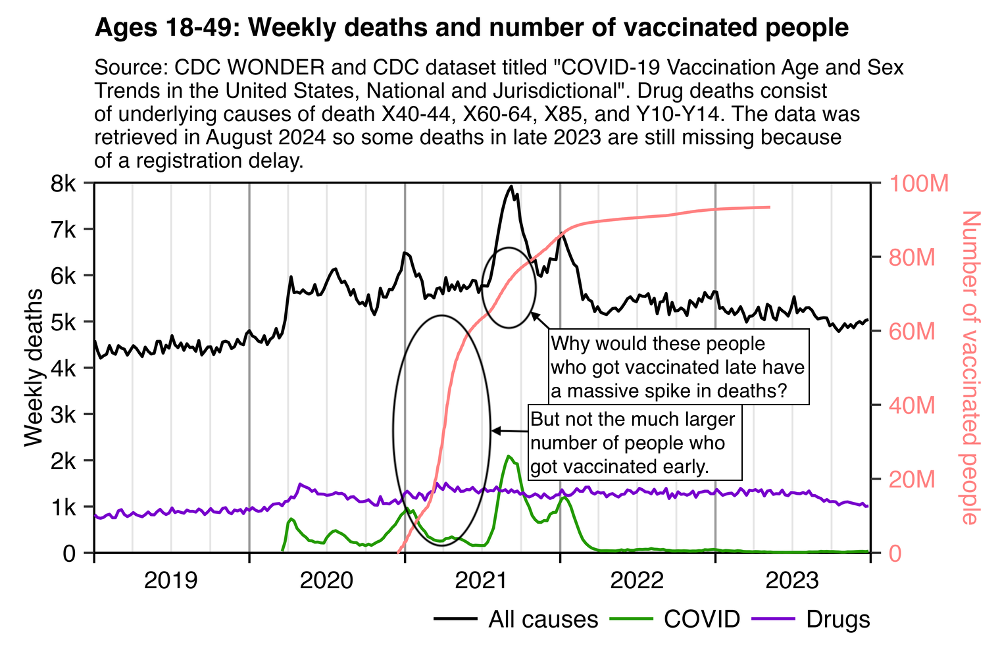
So if the mandates caused a massive wave of deaths then why weren't people also dropping like flies around March to May 2021 when a larger number of people got vaccinated? The plot above also shows that the spike in deaths in the third quarter of 2021 can mostly be attributed to deaths where the underlying cause was listed as COVID. And the plot above shows that part of the excess deaths in 2021 relative to 2019 can be explained by deaths from drug overdoses.
Kirsch wrote:
The US cumulative excess mortality is consistent with Aarstad (2023) showing the same effect is happening in the US. With the mass introduction of vaccines in the US in 2021, we should have expected the Cumulative crude excess mortality to have reversed course, but it just kept getting worse and worse. This is a stunning chart because after such a huge mortality increase in 2020, we've "pulled forward" the deaths of the weakest so excess death rates should turn into deficit death rates and the cumulative excess mortality bars should have gone down in 2021, down further in 2022, etc. Instead, things went the wrong direction. If the vaccine was drastically reducing deaths, then how do we explain this? There is a mysterious force driving up excess deaths and it's MUCH stronger than the vaccine. What is it?
Krisch compared total ASMR in 2021 against total ASMR in 2020, but 2020 also includes the months before COVID which reduces the total ASMR for 2020. And a lot of the excess deaths in 2021 were in January when there weren't yet that many people vaccinated.
But anyway I think Ethical Skeptic exaggerates the magnitude of the PFE: ethical2.html#Should_the_PFE_adjustment_last_for_only_6_6_years. He applies the PFE adjustment to the baseline for only 6.6 years, because he calculated that at some point the average age of people who died from COVID in Florida was 82 years, and he got a life expectancy of 6.6 years for age 82 for males from a calculator at seniorliving.com. However the life expectancy for females of age 82 was about 8.2 years on the same website, so I don't know why he didn't even take the average life expectancy for both males and females. And in the 2019 US life table the life expectancy at age 82 was about 8.2 years for both sexes combined. And at CDC WONDER the average age of UCD COVID deaths was about 73.8 in Florida and about 73.9 in the whole US, so both are about 8 years lower than Ethical Skeptic's figure of 82 years.
When I took the life expectancies for each age from the 2019 US life table and I calculated their average weighted by the number of UCD COVID deaths for each age at CDC WONDER, the resulting life expectancy was about 14.5 years. And if we assume that 14.5 years was the average life expectancy of people who died from COVID, then even 14.5 years later there would still be many people who would be alive if they hadn't died of COVID. So the duration of the PFE adjustment should probably be much longer than 6.6 years, which would also cause the average magnitude of the PFE adjustment to be much lower because the adjustment would be spread out over a longer period.
I did a simulation with two scenarios, where in both scenarios the population size for each age started out as one tenth of the mid-2018 US resident population estimates. I otherwise used a 2011-2019 linear trend in CMR for each age in both scenarios, except in the other scenario I multiplied the mortality rates in 2020-2021 to match the actual pattern of excess deaths in the United States. But in the scenario with elevated mortality in 2020-2021 I got only about 1.5% less deaths in 2022-2024. (All of this is described under my previous link.)
USMortality also did similar simulations and he got a much lower reduction in deaths than in Ethical Skeptic's plots: [https://x.com/USMortality/status/1861469855607652804]
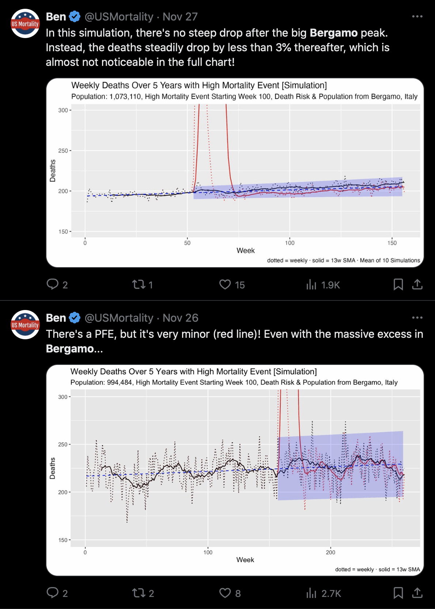
USMortality agrees with me that Ethical Skeptic's PFE adjustment is too heavy, and he said "I'd like to see actual proof that PFE actually exists" but so far I believe he has not found good evidence for the kind of heavy PFE hypothesized by Ethical Skeptic. [https://x.com/USMortality/status/1857130356052488394]
If you look at data for real deaths in Bergamo, there was also no clear reduction in deaths in the summer of 2020 apart from the very oldest age groups: [https://x.com/ULorre/status/1861170944204534073]
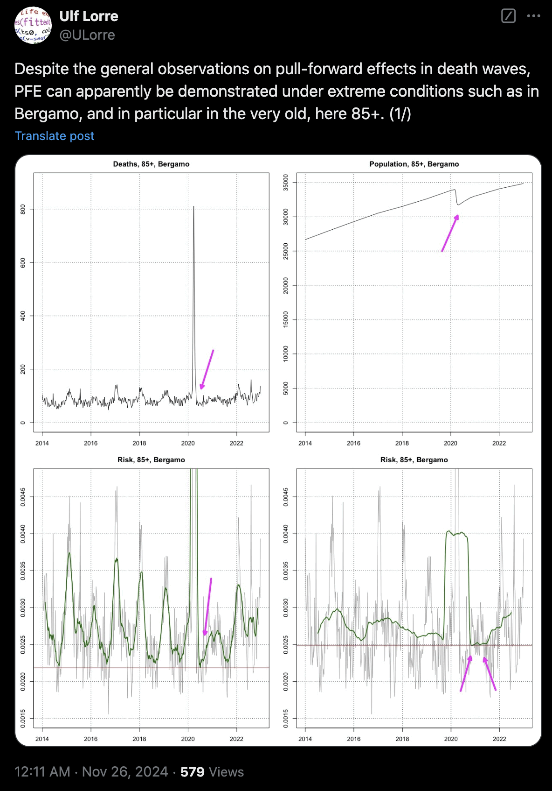
Similary I only got a clear reduction in deaths below the baseline in Bergamo in ages 90+ but not in ages 80-89: [nopandemic2.html#Should_NYC_and_Bergamo_have_reduced_deaths_due_to_a_pull_forward_effect]
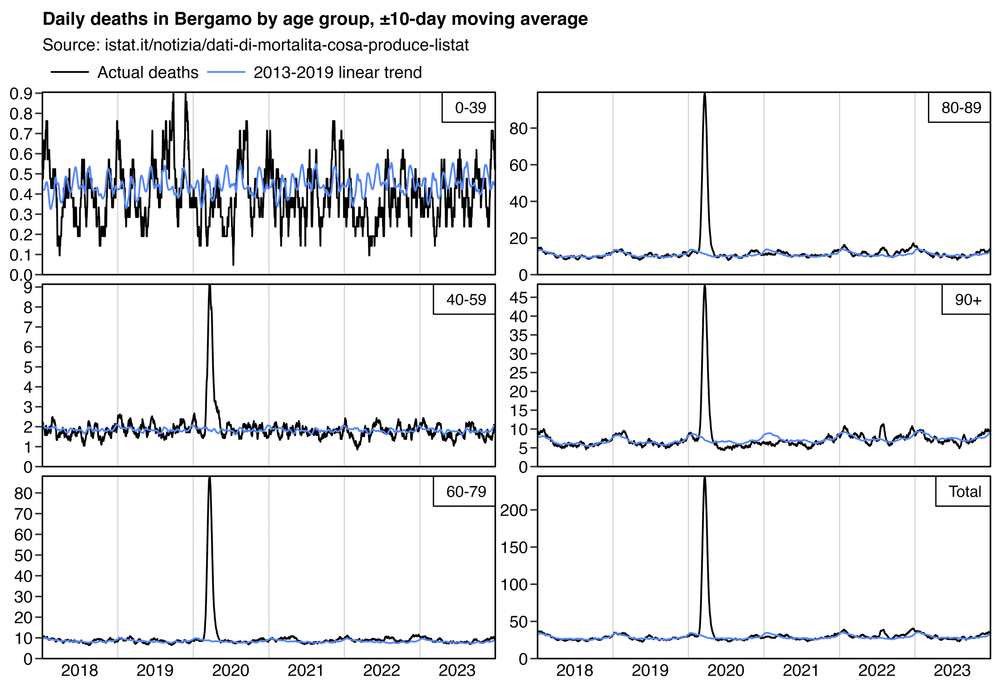
If you plot ASMR then it accounts for the reduction in population size due to excess deaths in a more straightforward and objective way than Ethical Skeptic's PFE adjustment. But Ethical Skeptic thinks ASMR is some kind of black magic and he usually plots raw deaths without even adjusting for population size, and he seems to have made up the shape of his PFE adjustment curve based on some arbitrary subjective criteria. I have been telling him to calculate expected deaths using a method where first you calculate the prepandemic trend in CMR for each age and then you multiply the population size of each age by the projection of the trend. It allows plotting raw deaths on the y-axis while still adjusting for the reduction in population size due to excess deaths and for changes to the age composition of the population, and it doesn't require you to pick any subjective magic numbers for the magnitude or duration for the PFE adjustment. But so far I have never seen him use that method either. But neither method nor ASMR produces nearly as heavy reduction in the expected deaths as his PFE adjustment.
Kirsch wrote: "In 2023, the mainstream news in 98.5% vaccinated Australia reported that 'A troubling new study released this week has shown Australia is experiencing its highest excess mortality rates in over 80 years.'" And he linked to this article: https://www.news.com.au/lifestyle/health/health-problems/report-shows-australias-excess-mortality-rate-has-risen-to-levels-not-seen-since-world-war-ii/news-story/2f86a5483b9ae8363fc80082ae95ba3d.
The article was about excess deaths in 2022 and not 2023, and it said that Australia had about 20,000 excess deaths in 2022. At first I thought they might have exaggerated excess deaths if they used a prepandemic average baseline like the Australian Bureau of Statistics, but at Mortality Watch a 2010-2019 linear baseline also gave me 19,135 excess deaths in 2022: [https://www.mortality.watch/explorer/?c=AUS&t=deaths&e=1&bf=2010&p=0]
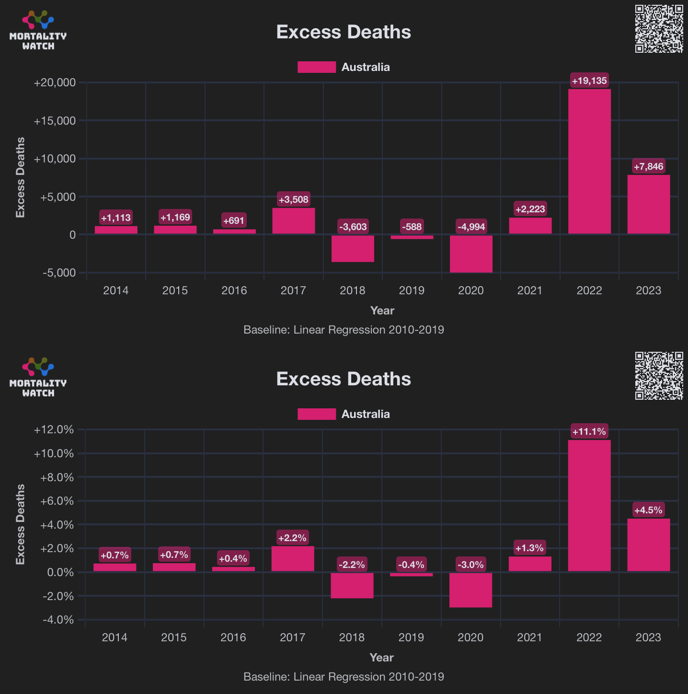
However the percentage of excess deaths in 2022 was only about 11%, and as a whole Australia has had low excess mortality since 2020 compared to countries that were not able to keep the virus out with lockdowns until the population was vaccinated.
And if the excess deaths were caused by the vaccines, then why wasn't there already high excess mortality in 2021?
Most regions of Australia had negative seasonality-adjusted mortality around the time in 2021 when people got the primary course doses. But there was a sudden spike up in excess deaths around January 2022 which coincided with a similarly sharp spike in PCR positivity rate, except in Western Australia where the PCR positivity remained close to 0% in January 2022, there was also no clear increase in excess deaths in January 2022:
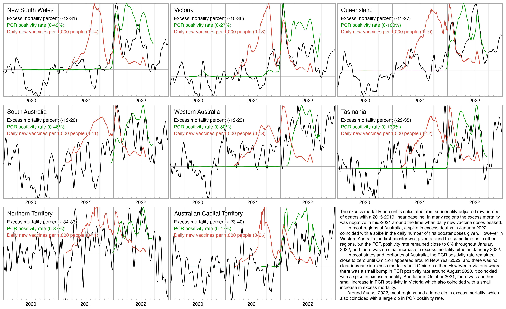
Kirsch also wrote: "An excess deaths inquiry was held to investigate Australia's excess of nearly 30,000 deaths throughout 2021-2023." However in my screenshot from Mortality Watch above where I used a 2010-2019 linear baseline, the number of excess deaths in Australia is 2,223 in 2021, 19,135 in 2022, and 7,846 in 2023, so almost none of the excess deaths were in 2021. And the total excess mortality in 2021-2023 was only about 5.7%.
Kirsch wrote: "Ed Dowd's book 'Cause Unknown' documents 500 people who died unexpectedly (that was the sole criteria). They have something in common: as far as we know, only one of the 500 was unvaccinated."
The Twitter user WaitingForPerot who is specialized in researching the dead atheletes story posted this tweet (where in the replies he showed evidence that the three people circled in green died before their age group was eligible for vaccination): [https://x.com/WaitingForPerot/status/1739655583450517957]
Did @stkirsch think he was smart using an alternate cover of Dowd’s book? Only problem is it’s just as bad (worse?) than the original.
The 3 GREEN weren't vaccinated:
• Alex Apolinario
• Josh Downie
• Emmanuel AntwiThe BLUE is Logan Luker. Tragically, he took his own life.
Another version of the cover image features Brandon Fahey who was not vaccinated and who died from a malformed blood vessel in his brain, and it featured Aaron Vasquez who died from a congenital heart defect: [https://x.com/Truth_in_Number/status/1743327152685085159]


An article about Vasquez said that one of his coronary arteries "was in a place that, left surgically uncorrected, could result in death", and that he "was neither under the effects of the coronavirus nor of any vaccine against the coronavirus" (even though I don't know if it means he was unvaccinated). [https://parentheartwatch.org/dumont-student-athlete-who-suddenly-died-14-had-undetected-heart-condition-dad-says/]
This section consists of my comments to this Substack post: https://kirschsubstack.com/p/my-rebuttal-on-the-claims-that-vaccines.
Kirsch wrote:
Analysis of the entire Hungarian population
Claim: If you got the shots, you had a lower likelihood of dying of COVID
Reality: Fig. 1 admits the all-cause mortality rapidly worse if you got the shots.
You can plainly see that with Moderna, you were worse off after just 80 days. And with Pfizer, it was a wash at 80 days. And the trend line was way better for the unvaxxed than for either mRNA vaccine post 80 days.
However the survival probability in the plot he posted is not adjusted for age. Table S1 shows that during the period displayed in Figure 1, the average age was about 45.6 for unvaccinated people, 45.0 for Janssen, 50.1 for Sputnik, 56.9 for Moderna, and 57.9 for Pfizer, which explains why the survival probability was low for Moderna and Pfizer but high for Janssen and Sputnik: [https://www.mdpi.com/article/10.3390/vaccines10071009/s1]
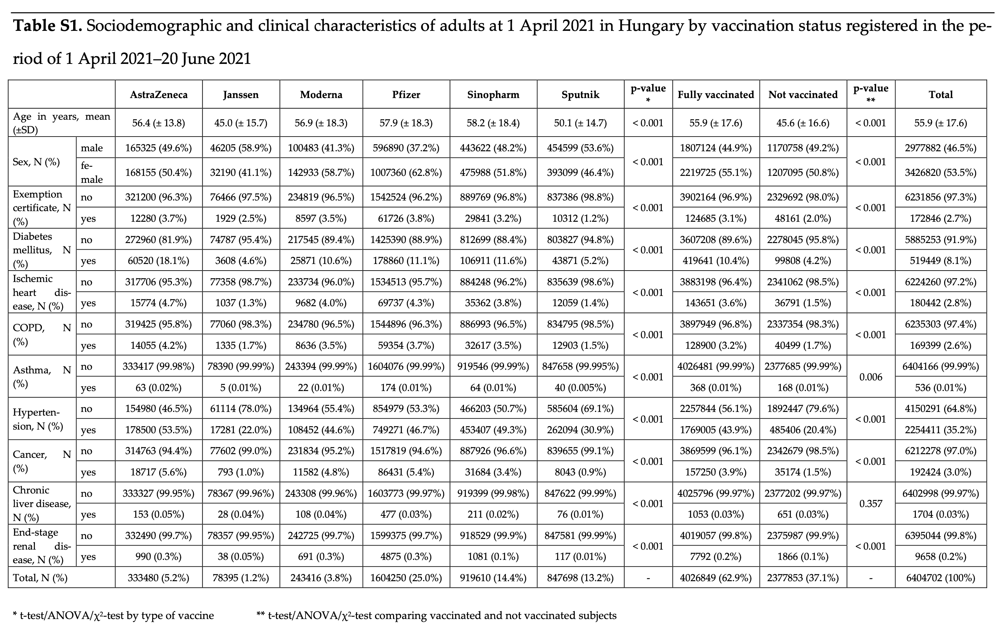
Kirsch wrote:
Claim: Some countries, notably Hong Kong, vaccinated their population in 2021 and had no excess deaths until Omicron. If vaccination caused excess deaths, they would have happened during that period.
Reality:
He used a 2010-2019 linear baseline for CMR in Hong Kong, but it might not be accurate because the trend in CMR in 2014-2019 seemed to be curved upwards, and even 2019 was already clearly above the 2010-2019 linear baseline: [https://www.mortality.watch/explorer/?c=HKG&t=cmr&df=2005&bf=2010&bt=2019]
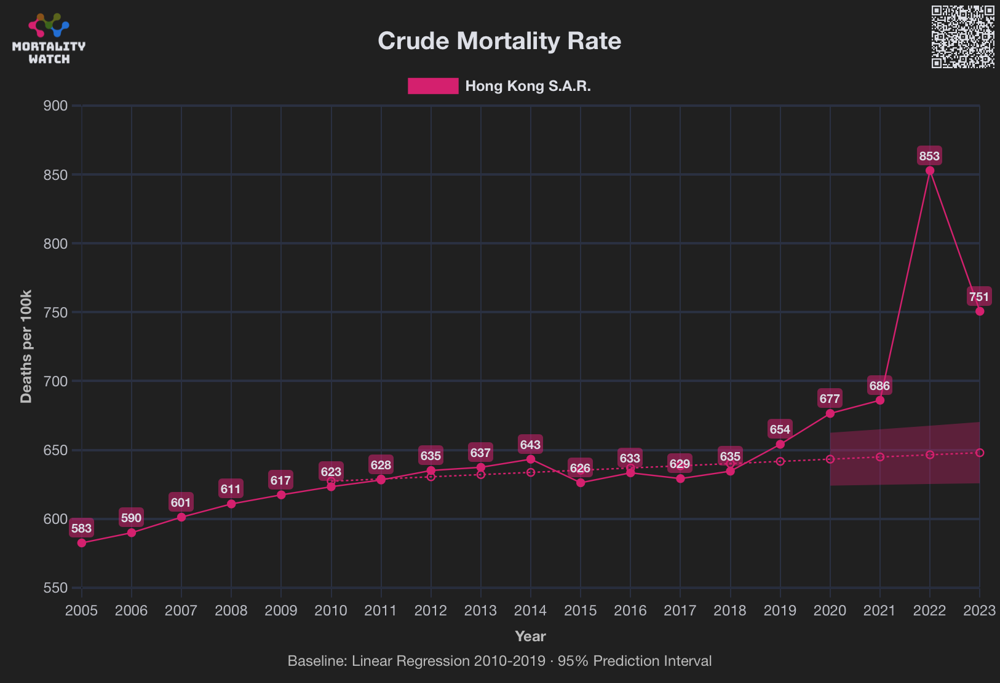
Wilf didn't claim that Singapore had no excess deaths until 2022, because he wrote that excess deaths in Singapore started in "Oct-2021, with Delta". However Singapore had close to 0% excess deaths in the first half of 2021 when most people got vaccinated:
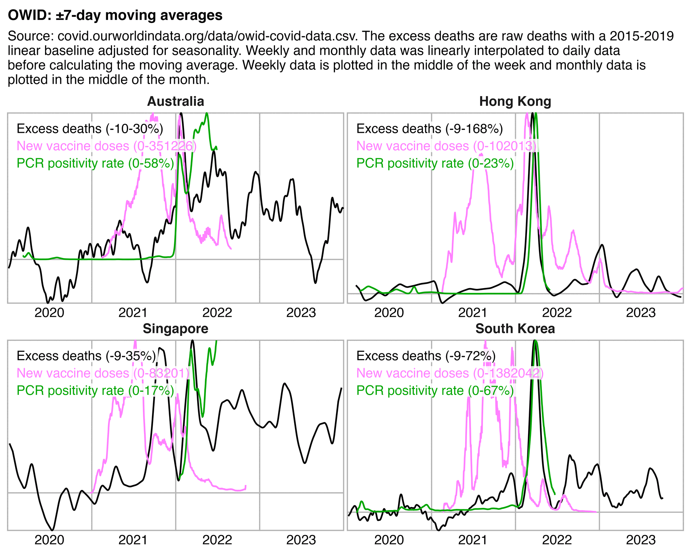
download.file("https://covid.ourworldindata.org/data/owid-covid-data.csv","owid-covid-data.csv")
library(data.table);library(ggplot2)
ma=\(x,b=1,f=b){x[]=rowMeans(embed(c(rep(NA,b),x,rep(NA,f)),f+b+1),na.rm=T);x}
t=fread("owid-covid-data.csv")
pick=sort(c("Hong Kong","Singapore","South Korea","Australia"))
a=t[location%in%pick,.(location,date,excess_mortality,new_vaccinations,positive_rate)]
a[,positive_rate:=positive_rate*100]
shil=\(x,y=1)c(tail(x,-y),rep(NA,y))
wemo=\(x){rle=rle(is.na(x));len=table(rle$lengths[rle$values]);if(sum(len["29"],len["30"],na.rm=T)>2)x=shil(x,15);if(!is.na(len["6"]>3))x=shil(x,3);x}
a[,excess_mortality:=wemo(excess_mortality),location]
var=setkey(fread(text="z,name,h,s,b
excess_mortality,Excess deaths,0,0,0
new_vaccinations,New vaccine doses,30,.5,1
positive_rate,PCR positivity rate,12,1,.65"),z)
var[,color:=hsv(h/36,s,b)]
var[,color:=hsv(h/36,s,b)]
ispct=c("excess_mortality","positive_rate")
p=a[,.(group=factor(location,pick),x=date,z=rep(names(.SD)[-(1:2)],each=.N),y=unlist(.SD[,-(1:2)]))]
p[,y:=zoo::na.approx(y,na.rm=F),.(group,z)]
p[,z:=factor(z,intersect(p$z,var$z))]
lab=merge(p[,.(min=min(y,na.rm=T),max=max(y,na.rm=T)),.(group,z)],var)[is.finite(max)]
lab=lab[,.(group,z,color,label=paste0(name," (",pmin(0,round(min)),"-",round(max),ifelse(z%in%ispct,"%",""),")"))]
p[,y:=ma(y,7),.(group,z)][,y:=y/max(y,na.rm=T),.(group,z)]
lab=merge(p[,.(ymin=min(y,na.rm=T)),group],lab)
lab[,y:=seq(1-.08*(1-ymin[1]),,-1/11*(1-ymin[1]),.N),group]
lab[,hjust:=c(0,0,0,0)[group]]
xstart=as.Date("2020-1-1");xend=as.Date("2024-1-1")
xbreak=seq(xstart,xend,"6 month")
xlab=ifelse(month(xbreak)==7,year(xbreak),"")
ggplot(p,aes(x,y))+
facet_wrap(~group,ncol=2,strip.position="top",scales="free")+
geom_vline(xintercept=seq(xstart,xend,"year"),linewidth=.3,color="gray70",lineend="square")+
geom_hline(yintercept=0:1,linewidth=.3,color="gray70",lineend="square")+
geom_hline(data=p[,min(y,na.rm=T),group],aes(yintercept=V1),linewidth=.3,color="gray70",lineend="square")+
geom_line(aes(color=z),linewidth=.4)+
geom_label(data=lab,aes(hjust=hjust,x=`class<-`(ifelse(hjust==0,xstart+30,xend-30),"Date"),y=y,label=label,color=z),fill=alpha("white",.85),label.r=unit(0,"pt"),label.padding=unit(1,"pt"),label.size=0,size=2.4)+
labs(x=NULL,y=NULL,title="OWID: ±7-day moving averages",subtitle="Source: covid.ourworldindata.org/data/owid-covid-data.csv. The excess deaths are raw deaths with a 2015-2019 linear baseline adjusted for seasonality. Weekly and monthly data was linearly interpolated to daily data before calculating the moving average. Weekly data is plotted in the middle of the week and monthly data is plotted in the middle of the month."|>stringr::str_wrap(110))+
scale_x_date(limits=c(xstart,xend),breaks=xbreak,labels=xlab)+
scale_y_continuous(limits=c(NA,1))+
scale_color_manual(values=var[levels(p$z),color])+
coord_cartesian(clip="off",expand=F)+
theme(axis.text=element_text(size=7,color="black"),
axis.text.y=element_blank(),
axis.ticks.length=unit(0,"pt"),
legend.position="none",
panel.spacing=unit(2,"pt"),
panel.spacing.y=unit(1,"pt"),
panel.background=element_blank(),
panel.grid=element_blank(),
plot.margin=margin(4,4,3,4),
plot.subtitle=element_text(size=7,margin=margin(,,4)),
plot.title=element_text(size=7.5,face="bold",margin=margin(1,,4)),
strip.background=element_blank(),
strip.text=element_text(face=2,margin=margin(,,3),size=7))
ggsave("1.png",width=5,height=4,dpi=380*4)
system("magick 1.png -resize 25% -colors 256 1.png")
The plot above also shows that in Hong Kong, South Korea, and Australia, the PCR positivity rate remained close to 0% until 2022, but in 2022 there was a sharp spike in excess deaths which coincided with a sharp spike in the PCR positivity rate. Why would vaccines not result in excess deaths in 2021 but they would only result in a sharp spike in deaths much later in 2022? In South Korea the spike did not even coincide with the booster rollout because the booster rollout had peaked about 3 months earlier.
Wilf's initial arguments to Kirsch were posted here: https://docs.google.com/document/d/1mFuduR7b0YBfjXYTwNkv5pB-tioKzRbhgrMacknjh1k.
Wilf's Google Docs document included this table:
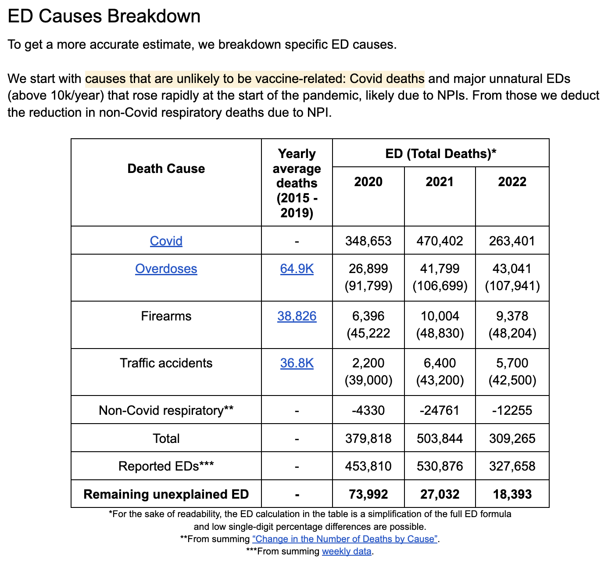
Even though he used a 2015-2019 average baseline to calculate excess deaths due to drugs, traffic accidents, and firearm use, he took the overall number of excess deaths from a CDC dataset which used a 2013-2019 trend as the baseline. CDC's website said: "Counts of deaths in the most recent weeks were compared with historical trends (from 2013 to present) to determine whether the number of deaths in recent weeks was significantly higher than expected, using Farrington surveillance algorithms (1)." [https://www.cdc.gov/nchs/nvss/vsrr/covid19/excess_deaths.htm] So the CDC dataset took into account that in 2013-2019 there was an increasing trend in deaths from drug overdoses and it assumed that the trend would continue during COVID, which means that Wilf's 2015-2019 average baseline exaggerates the contribution of drug overdose deaths to total excess deaths in the CDC dataset.
For example Wilf got 43,000 excess drug overdose deaths in 2022, which was very close to my figure here when I used a 2015-2019 average baseline, but my number of excess deaths fell by more than half when I used a 2013-2019 linear baseline instead:
v=fread("curl -Ls sars2.net/f/vital.csv.xz|xz -dc")
a=v[,.(dead=sum(ucd)),.(year,cause)]
drug=a[cause%like%"X4[0-4]|X6[0-4]|Y1[0-4]",.(dead=sum(dead)),year]
d=drug[year>=2020]
d$ave=drug[year%in%2015:2019,mean(dead)]
d$trend=drug[year%in%2013:2019,predict(lm(dead~year),d)]
round(d[,excessave:=dead-ave][,excesstrend:=dead-trend][])
year dead ave trend excessave excesstrend 1: 2020 91631 64734 78951 26897 12680 2: 2021 106485 64734 83883 41751 22602 3: 2022 107734 64734 88816 43000 18918
When I similarly used a 2013-2019 linear trend to also calculate excess deaths from traffic accidents and firearm use, they were also much lower than in Wilf's table. My remainder of unexplained deaths was much higher than in Wilf's table, even though it seems to be mostly because I looked at UCD COVID instead of MCD COVID:
a=v[,.(dead=sum(ucd)),.(year,cause)] d=a[cause=="U071",.(year,cdcexcess=c(453810,530876,327658),covid=dead)] a$group=NA a$group[a$cause%like%"X4[0-4]|X6[0-4]|Y1[0-4]"]="drug" a$group[a$cause%like%"V"]="traffic" a$group[a$cause%like%"X7[2-4]|X9[3-5]|W3[2-4]|Y2[2-4]"]="gun" a=a[!is.na(group),.(dead=sum(dead)),.(year,group)] a=merge(a[year%in%2013:2019,.(year=d$year,base=predict(lm(dead~year),d)),group],a) d=merge(d,dcast(a[,value:=dead-base],year~group)) d$remainder=d$cdcexcess-rowSums(d[,-(1:2)]) print(round(d),r=F)
year cdcexcess covid drug gun traffic remainder 2020 453810 350831 12680 2983 1047 86269 2021 530876 416893 22602 5467 4850 81065 2022 327658 186552 18918 3535 3088 115565
Wilf took the number of COVID deaths from OWID which in turn took it from WHO. [https://ourworldindata.org/explorers/covid?tab=table&time=earliest%2e%2e2022-12-31&country=%7eUSA&pickerSort=desc&pickerMetric=total_deaths&Metric=Confirmed+deaths&Interval=Cumulative&Relative+to+population=false, https://data.who.int/dashboards/covid19/data?n=c&m49=840] The number of deaths in the WHO dataset doesn't match either MCD or UCD COVID deaths at CDC WONDER, but it might be because the WHO dataset is by "date reported to WHO" but CDC WONDER is by date of occurrence. The numbers in the WHO dataset are also slightly off from OWID, but I think it's because OWID interpolated WHO's weekly data to daily data. Here I converted the weekly deaths to yearly deaths based on the year of Sunday in the second column but based on the year of Thursday in the third column, which alone made a big difference to the number of deaths in 2020:
> who=fread("https://srhdpeuwpubsa.blob.core.windows.net/whdh/COVID/WHO-COVID-19-global-data.csv")
> d=who[Country_code=="US",.(dead_sunday=sum(New_deaths,na.rm=T)),.(year=year(Date_reported))]
> merge(d,who[Country_code=="US",.(dead_thursday=sum(New_deaths,na.rm=T)),.(year=year(Date_reported-3))])
year dead_sunday dead_thursday
1: 2020 342920 362570 # 348653 in Wilf's table
2: 2021 469667 459163 # 470402
3: 2022 267389 260723 # 263401
4: 2023 84511 82031
5: 2024 45580 45580
The WHO dataset appears to correspond to MCD rather than UCD deaths at CDC WONDER, except the deaths in the WHO dataset seem to be reported with a delay so that there's less deaths in 2020 and 2021 but more deaths in 2022:
> v[cause=="U071",.(ucd=sum(ucd),mcd=sum(mcd)),year] year ucd mcd 1: 2020 350831 397566 2: 2021 416893 478402 3: 2022 186552 254355
But anyway Wilf might have underestimated the remainder of unexplained death because he looked at MCD rather than UCD COVID deaths (even though UCD COVID seems to fall short of excess deaths during COVID waves).
However CDC's estimate for excess deaths seems to be accurate, or at least it's close to my estimate here where I multiplied the 2013-2019 trend in CMR for each age by the mid-year resident population estimate for the age:
d=data.table(year=2020:2022,cdcexcess=c(453810,530876,327658))
years=2011:2023
t=fread("http://sars2.net/f/uspopdead.csv")[year%in%years]
t=merge(t,t[year<2020,.(year=years,base=predict(lm(dead/pop~year),.(year=years))),age])
t=t[,.(dead=sum(dead),base=sum(base*pop)),year]
merge(d,t[,.(year,myexcess=dead-base)])|>print(r=F)
year cdcexcess myexcess 2020 453810 468885.1 2021 530876 515125.3 2022 327658 285018.6
USMortality commented on Wilf's arguments here: https://www.usmortality.com/p/debunking-pro-vaccine-arguments-in.
USMortality wrote: "Data from the Mortality Watch Excess Ranking, based on age-standardized deaths and a conservative 3-year pre-pandemic baseline, reveals at least two dozen countries that did not exhibit statistically significant excess mortality during the 2020–2023 period."
However he determined statistical significance based on whether the yearly ASMR crossed above the upper end of the 95% PI or not. The 2017-2019 average baseline for ASMR is too high in most countries and it often produces a very wide 95% prediction interval compared to a linear regression baseline with a longer fitting period. So for example in these plots for Sweden, the ASMR in 2020 crossed above the 95% PI when I used a 2010-2019 linear baseline but not when I used a 2017-2019 average baseline, and the average baseline also produced a very wide 95% PI: [https://www.mortality.watch/explorer/?c=SWE&df=2010&bf=2010&bm=lin_reg]


USMortality posted this plot for COVID ASMR by vaccination status at OWID, which used data from a CDC dataset where partially vaccinated people who had not finished the primary course doses at least 14 days ago were excluded: [https://ourworldindata.org/grapher/united-states-rates-of-covid-19-deaths-by-vaccination-status, https://data.cdc.gov/Public-Health-Surveillance/Rates-of-COVID-19-Cases-or-Deaths-by-Age-Group-and/54ys-qyzm/about_data]
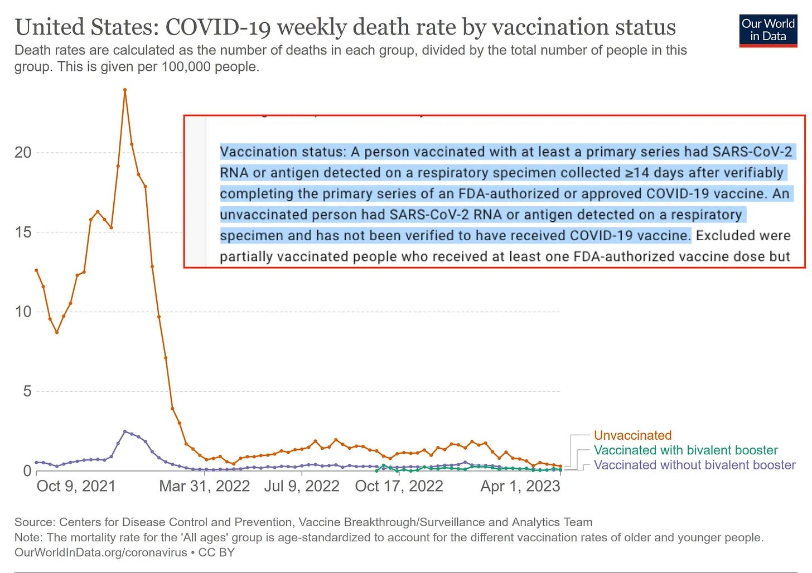
However the plot only started from October 9th 2021, and there weren't very many people who only received the primary course doses in October 2021 or later so it didn't make much difference if people were classified as vaccinated immediately after vaccination or not (even though it may have made a bigger difference if people who had received only one dose were excluded entirely).
But anyway in the Czech record-level data when I plotted all-cause ASMR but I classified people as unvaccinated until 3 weeks from the first dose, it gave an advantage to unvaccinated people because it reduced the ASMR of unvaccinated people and it increased the ASMR of vaccinated people (but in late 2021 the classification delay no longer made much difference because there were few new people who got vaccinated that late): [czech4.html#ASMR_when_people_are_classified_as_unvaccinated_until_three_weeks_from_vaccination]
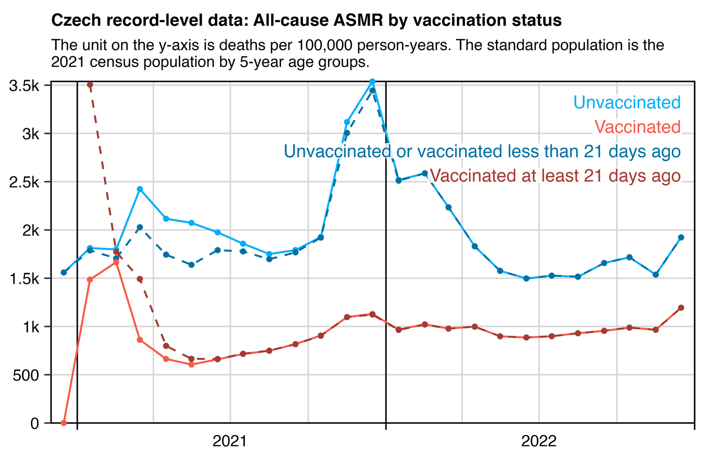
Similarly in Dutch CBS data, people who were not fully vaccinated had lower COVID ASMR than unvaccinated people: [https://www.cbs.nl/nl-nl/longread/rapportages/2024/covid-vaccinatiestatus-en-sterfte/3-resultaten]
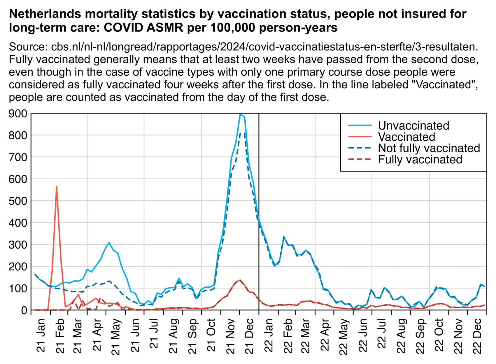
In the next plot for the English ONS data, I plotted CMR in a single age group instead of ASMR in all age groups, because I had to calculate the mortality rate in the fully and not fully vaccinated people by adding together multiple vaccination status groups, and it's not possible to add together ASMR values when the population denominators are not the same, but it is possible to calculate CMR for different vaccination status groups combined by simply dividing total deaths across different groups with total person-years. And the reason why I picked the age group 80-89 was that it had the highest number of total COVID deaths. But anyway, the next plot shows that in early 2021 people who were not fully vaccinated had much lower COVID ASMR than unvaccinated people, even though by late 2021 there was no longer much difference because there were few new people getting vaccinated:
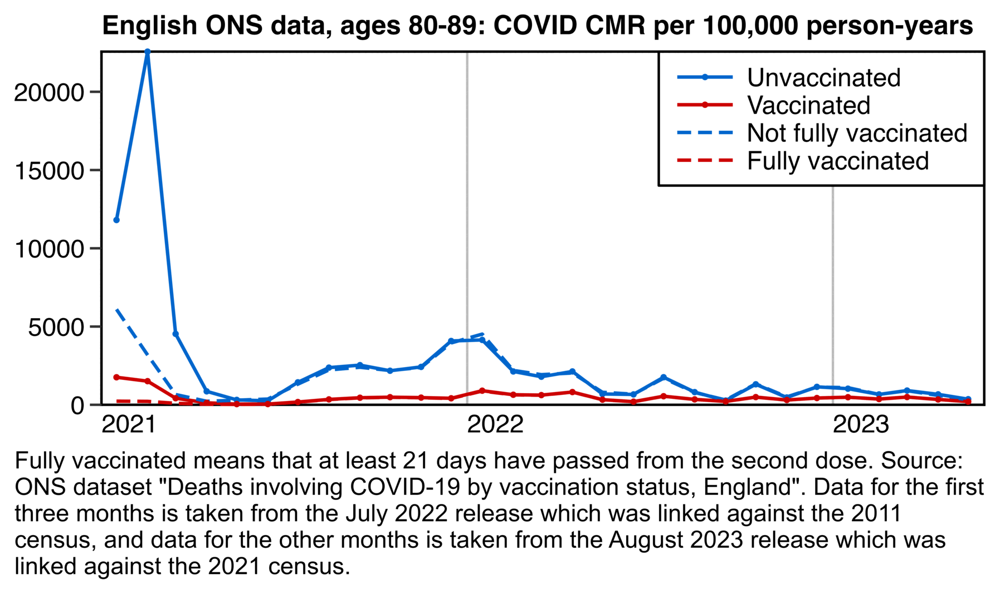
library(data.table);library(ggplot2)
t=fread("http://sars2.net/f/ons.csv")
t=rbind(t[ed==7&month<="2021-03"],t[ed==9])
t=t[cause=="Deaths involving COVID-19"&age=="80-89"]
p=t[status=="Unvaccinated",.(y=dead/pop,month,z=status)]
p=rbind(p,t[status!="Unvaccinated",.(y=sum(dead)/sum(pop),z="Vaccinated"),month])
p=rbind(p,t[status%like%"Unvaccinated|First|Second dose, less",.(y=sum(dead)/sum(pop),z="Not fully vaccinated"),month])
p=rbind(p,t[status%like%"Second dose, at|Third|Fourth",.(y=sum(dead)/sum(pop),z="Fully vaccinated"),month])
p[,y:=y*1e5]
p[,z:=factor(z,unique(z))]
p[,month:=as.Date(paste0(month,"-1"))]
xstart=as.Date("2021-1-1");xend=as.Date("2023-6-1")
xbreak=seq(as.Date("2021-1-1"),xend,"year");xlab=year(xbreak)
ybreak=pretty(p$y,7);ystart=0;yend=max(p$y,na.rm=T)
ggplot(p,aes(x=month+15,y))+
geom_vline(xintercept=seq(as.Date("2021-1-1"),as.Date("2023-1-1"),"year"),color="gray75",linewidth=.5)+
geom_vline(xintercept=c(xstart,xend),linewidth=.5,lineend="square")+
geom_hline(yintercept=c(ystart,yend),linewidth=.5,lineend="square")+
geom_line(aes(color=z,linetype=z),linewidth=.7)+
geom_point(aes(color=z,alpha=z),stroke=0,size=1.3)+
labs(x=NULL,y=NULL,title="English ONS data, ages 80-89: COVID CMR per 100,000 person-years")+
scale_x_date(limits=c(xstart,xend),breaks=xbreak,labels=xlab)+
scale_y_continuous(limits=c(ystart,yend),breaks=ybreak)+
scale_color_manual(values=hsv(c(21,0,21,0)/36,1,.8))+
scale_linetype_manual(values=c("solid","solid","42","42"))+
scale_alpha_manual(values=c(1,1,0,0))+
coord_cartesian(clip="off",expand=F)+
theme(axis.text=element_text(size=11,color="black"),
axis.text.x=element_text(hjust=0,margin=margin(4)),
axis.ticks=element_line(linewidth=.5),
axis.ticks.length=unit(5,"pt"),
axis.ticks.length.x=unit(0,"pt"),
legend.background=element_rect(fill="white",color="black",linewidth=.5),
legend.box.spacing=unit(0,"pt"),
legend.direction="vertical",
legend.justification=c(1,1),
legend.key=element_blank(),
legend.key.height=unit(12,"pt"),
legend.key.width=unit(30,"pt"),
legend.margin=margin(5,7,5,5),
legend.position=c(1,1),
legend.spacing.x=unit(3,"pt"),
legend.spacing.y=unit(0,"pt"),
legend.text=element_text(size=11),
legend.title=element_blank(),
panel.background=element_blank(),
panel.grid=element_blank(),
plot.margin=margin(7,7,5,7),
plot.title=element_text(size=11.5,face="bold",margin=margin(,,5)))
ggsave("1.png",width=6,height=2.7,dpi=300*4)
sub="Fully vaccinated means that at least 21 days have passed from the second dose. Source: ONS dataset \"Deaths involving COVID-19 by vaccination status, England\". Data for the first three months is taken from the July 2022 release which was linked against the 2011 census, and data for the other months is taken from the August 2023 release which was linked against the 2021 census."
system(paste0("mogrify -trim 1.png;w=`identify -format %w 1.png`;magick 1.png \\( -size $[w]x -font Arial -interline-spacing -3 -pointsize $[43*4] caption:'",gsub("'","'\\\\'",sub),"' -splice x100 \\) -append -resize 25% -bordercolor white -border 26 -colors 256 1.png"))
USMortality wrote: "On the other hand, data from New Zealand provides a contrasting perspective. It shows that mortality rates for vaccinated and unvaccinated groups are similar, and the country experienced no statistically significant excess mortality during the pandemic."
In the blog post USMortality linked to, he took the number of deaths by vaccination status from a FOIA response which was missing population sizes, so he had to estimate the population sizes of unvaccinated and vaccinated people by merging the FOIA response with two other datasets where the population sizes were completely unreliable: https://x.com/henjin256/status/1804593333924442299. Me and Uncle John Returns also looked at the same FOIA data but we concluded that it was not possible to calculate mortality rates based on the response properly because accurate population sizes were not available.
In this plot by USMortality if you look at the CMR in 2022 only, it's over twice as high in unvaccinated people as vaccinated people in ages 0-20, 21-40, and 41-60, but ages 81+ follow the opposite pattern so vaccinated people have about twice as high CMR as unvaccinated people. That should've served as a basic sanity check to USMortality that his population sizes were so inaccurate that he shouldn't even have published his analysis: [https://www.usmortality.com/p/new-zealands-all-cause-deaths-and]
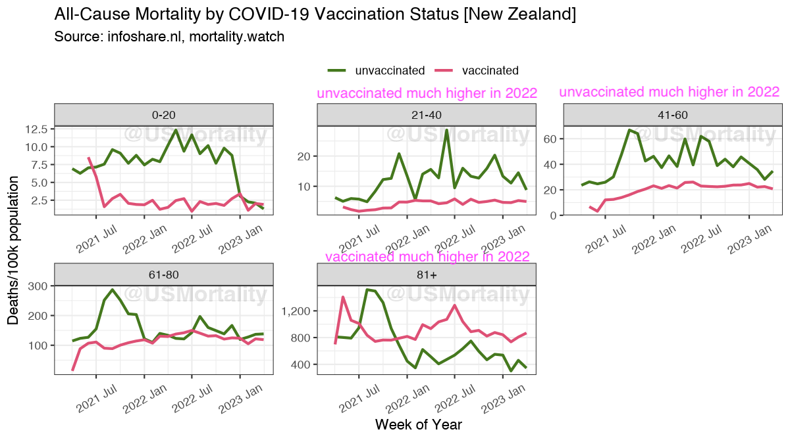
The plot above also doesn't match Barry Young's dataset, where in 2022 vaccinated people had lower CMR than the general NZ population in all age groups shown above (even though unvaccinated people are overrepresented at the lower end of the age groups which reduces unvaccinated CMR relative to vaccinated CMR):
agecut=\(x,y)cut(x,c(y,Inf),paste0(y,c(paste0("-",y[-1]-1),"+")),T,F)
ages=c(0,21,41,61,81)
t=fread("http://sars2.net/f/buckets.gz")
pop=fread("http://sars2.net/f/nzpopdead.csv")
nz=pop[year==2022,.(nz=sum(dead)/sum(pop,na.rm=T)*1e5),.(age=agecut(age,ages))]
barry=t[year(date)==2022,.(barry=sum(dead)/sum(alive)*365e5),.(age=agecut(age,ages))]
print(mutate_if(merge(nz,barry),is.double,round),r=F)
age nz barry # deaths per 100,000 person-years 0-20 33 30 # the `nz` column includes both vaccinated and unvaccinated people 21-40 67 62 # the `barry` column includes only vaccinated people 41-60 297 295 61-80 1562 1519 81+ 10944 9914
However there weren't very many people who only got their first vaccine dose after January 2022. So one way the FOIA response can be employed to estimate if the vaccines were effective or not is to look at the percentage increase in deaths in March 2022 when New Zealand was first hit by COVID. But for example in ages 81-100 between February and March 2022, the number of deaths divided by days in month increased by about 57% in unvaccinated people but only by about 16% in vaccinated people: [moar.html#Deaths_in_ages_81_in_Chris_Johnstons_OIA_response]
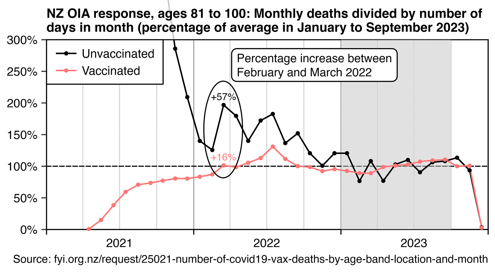
In his Substack post USMortality wrote that New Zealand "experienced no statistically significant excess mortality during the pandemic". He may have again meant that the yearly ASMR didn't cross above the 95% PI when he used a 2017-2019 average baseline. But the yearly ASMR would have crossed above the 95% PI if he would've used a 2011-2019 linear baseline instead (and monthly ASMR would've crossed above the 95% PI even with a 2017-2019 average baseline): [https://www.mortality.watch/explorer/?c=NZL&df=2011&bm=lin_reg]